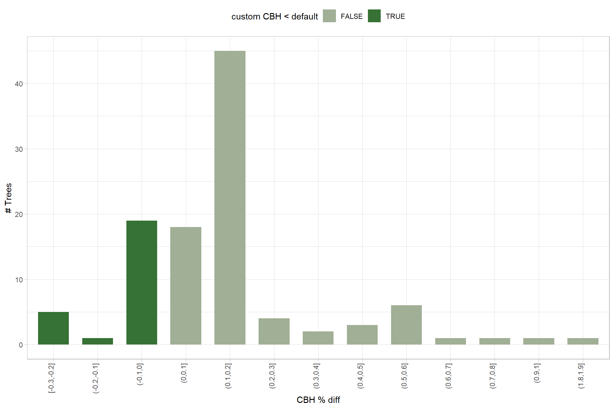
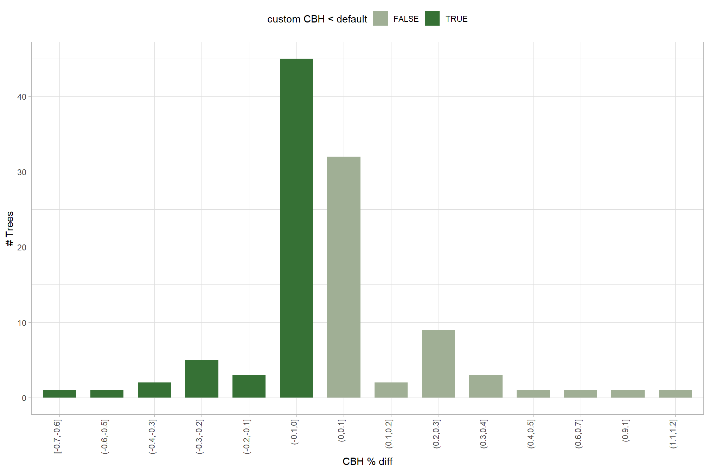
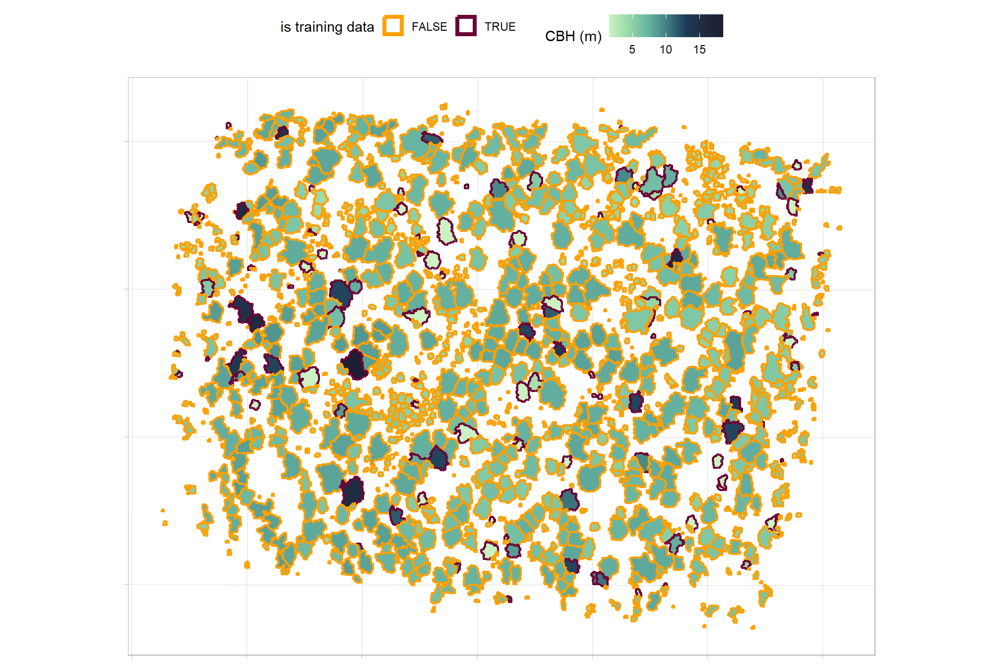
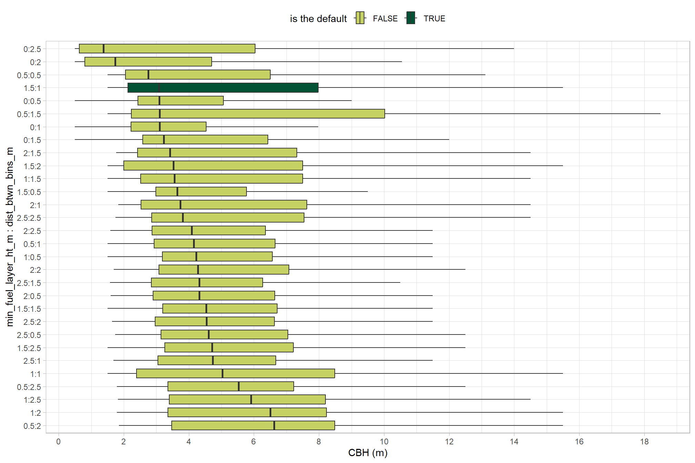

Section 3 CBH Process
In this prior section we reviewed the methodologies to process lidar data, extract a tree list, and estimate CBH.
Presently, we will outline the end-to-end process for accomplishing this task given some example lidar data.
3.1 Get some lidar data
Let’s load an example lidar dataset from Weinstein et al. (2021) in their NeonTreeEvaluation package.
We’ll use data from a NEON site that we know has conifers: RMNP (Rocky Mountain National Park)
# let's see some field trees data
NeonTreeEvaluation::field %>%
dplyr::filter(siteID == "RMNP") %>%
dplyr::count(taxonID) %>%
dplyr::arrange(desc(n))## taxonID n
## 1 PICOL 773
## 2 POTR5 292
## 3 PIPOS 91
## 4 PSME 89
## 5 ABLAL 57
## 6 PIEN 39
## 7 PIFL2 34let’s pick a site with the lowest proportion of POTR5
plots_temp <- NeonTreeEvaluation::field %>%
dplyr::filter(siteID == "RMNP") %>%
dplyr::group_by(plotID) %>%
dplyr::summarise(
trees = dplyr::n()
, conifers = sum(ifelse(taxonID=="POTR5", 0, 1))
) %>%
dplyr::mutate(pct_conifer = conifers/trees) %>%
dplyr::filter(trees>20) %>%
dplyr::arrange(desc(pct_conifer), desc(trees))
plots_temp## # A tibble: 20 × 4
## plotID trees conifers pct_conifer
## <fct> <int> <dbl> <dbl>
## 1 RMNP_042 111 111 1
## 2 RMNP_043 104 104 1
## 3 RMNP_047 59 59 1
## 4 RMNP_008 50 50 1
## 5 RMNP_048 50 50 1
## 6 RMNP_001 41 41 1
## 7 RMNP_006 39 39 1
## 8 RMNP_014 36 36 1
## 9 RMNP_012 35 35 1
## 10 RMNP_003 30 30 1
## 11 RMNP_018 29 29 1
## 12 RMNP_005 24 24 1
## 13 RMNP_002 21 21 1
## 14 RMNP_041 131 128 0.977
## 15 RMNP_004 27 26 0.963
## 16 RMNP_049 36 34 0.944
## 17 RMNP_007 30 24 0.8
## 18 RMNP_044 111 68 0.613
## 19 RMNP_045 229 57 0.249
## 20 RMNP_046 73 13 0.178get the lidar data
# get the laz file path
las_f_path <- paste0(system.file(package = "NeonTreeEvaluation"),"/extdata/") %>%
list.files(recursive = T, pattern = ".*\\.(laz|las)$", full.names = T) %>%
unique() %>%
dplyr::as_tibble() %>%
dplyr::rename(f_path = 1) %>%
dplyr::filter(
stringr::str_detect(f_path, as.character(plots_temp[1,]$plotID))
) %>%
.[1] %>%
dplyr::pull(f_path)
# check the data
lidR::readLAS(las_f_path)## class : LAS (v1.3 format 1)
## memory : 1.2 Mb
## extent : 453532.6, 453572.6, 4458556, 4458596 (xmin, xmax, ymin, ymax)
## coord. ref. : WGS 84 / UTM zone 13N
## area : 1653 m²
## points : 20.4 thousand points
## density : 12.35 points/m²
## density : 7.63 pulses/m²where in the world is this data?
zoom out if you can’t see anything
let’s read one file
## class : LAS (v1.3 format 1)
## memory : 1.2 Mb
## extent : 453532.6, 453572.6, 4458556, 4458596 (xmin, xmax, ymin, ymax)
## coord. ref. : WGS 84 / UTM zone 13N
## area : 1653 m²
## points : 20.4 thousand points
## density : 12.35 points/m²
## density : 7.63 pulses/m²plot a sample
las %>%
lidR::plot(
color = "Z", breaks = "quantile", bg = "white", legend = T
, pal = harrypotter::hp(n=50, house = "gryffindor")
)3.1.1 cloud2trees that lidar data
extract trees from the lidar data using cloud2trees to create some example tree-level point cloud data to test the LadderFuelsR function we define below with
cloud2trees_ans <- cloud2trees::cloud2trees(
input_las_dir = las_f_path
, output_dir = "../data"
, estimate_tree_dbh = F
, keep_intrmdt = T
)## Read files headers: [==========] 100% (1 threads) Overall: [ ] 0% (1 threads) | : no progress Overall: [ ] 0% (1 threads) | read_las: [ ] 0% (1 threads) Overall: [ ] 0% (1 threads) | read_las: [ ] 1% (1 threads) Overall: [ ] 0% (1 threads) | read_las: [ ] 2% (1 threads) Overall: [ ] 0% (1 threads) | read_las: [ ] 3% (1 threads) Overall: [ ] 0% (1 threads) | read_las: [ ] 4% (1 threads) Overall: [ ] 0% (1 threads) | read_las: [ ] 5% (1 threads) Overall: [ ] 0% (1 threads) | read_las: [ ] 6% (1 threads) Overall: [ ] 0% (1 threads) | read_las: [ ] 7% (1 threads) Overall: [ ] 0% (1 threads) | read_las: [ ] 8% (1 threads) Overall: [ ] 0% (1 threads) | read_las: [ ] 9% (1 threads) Overall: [ ] 0% (1 threads) | read_las: [= ] 10% (1 threads) Overall: [ ] 0% (1 threads) | read_las: [= ] 11% (1 threads) Overall: [ ] 0% (1 threads) | read_las: [= ] 12% (1 threads) Overall: [ ] 0% (1 threads) | read_las: [= ] 13% (1 threads) Overall: [ ] 0% (1 threads) | read_las: [= ] 14% (1 threads) Overall: [ ] 0% (1 threads) | read_las: [= ] 15% (1 threads) Overall: [ ] 0% (1 threads) | read_las: [= ] 16% (1 threads) Overall: [ ] 0% (1 threads) | read_las: [= ] 17% (1 threads) Overall: [ ] 0% (1 threads) | read_las: [= ] 18% (1 threads) Overall: [ ] 0% (1 threads) | read_las: [= ] 19% (1 threads) Overall: [ ] 0% (1 threads) | read_las: [== ] 20% (1 threads) Overall: [ ] 0% (1 threads) | read_las: [== ] 21% (1 threads) Overall: [ ] 0% (1 threads) | read_las: [== ] 22% (1 threads) Overall: [ ] 0% (1 threads) | read_las: [== ] 23% (1 threads) Overall: [ ] 0% (1 threads) | read_las: [== ] 24% (1 threads) Overall: [ ] 0% (1 threads) | read_las: [== ] 25% (1 threads) Overall: [ ] 0% (1 threads) | read_las: [== ] 26% (1 threads) Overall: [ ] 0% (1 threads) | read_las: [== ] 27% (1 threads) Overall: [ ] 0% (1 threads) | read_las: [== ] 28% (1 threads) Overall: [ ] 0% (1 threads) | read_las: [== ] 29% (1 threads) Overall: [ ] 0% (1 threads) | read_las: [=== ] 30% (1 threads) Overall: [ ] 0% (1 threads) | read_las: [=== ] 31% (1 threads) Overall: [ ] 0% (1 threads) | read_las: [=== ] 32% (1 threads) Overall: [ ] 0% (1 threads) | read_las: [=== ] 33% (1 threads) Overall: [ ] 0% (1 threads) | read_las: [=== ] 34% (1 threads) Overall: [ ] 0% (1 threads) | read_las: [=== ] 35% (1 threads) Overall: [ ] 0% (1 threads) | read_las: [=== ] 36% (1 threads) Overall: [ ] 0% (1 threads) | read_las: [=== ] 37% (1 threads) Overall: [ ] 0% (1 threads) | read_las: [=== ] 38% (1 threads) Overall: [ ] 0% (1 threads) | read_las: [=== ] 39% (1 threads) Overall: [ ] 0% (1 threads) | read_las: [==== ] 40% (1 threads) Overall: [ ] 0% (1 threads) | read_las: [==== ] 41% (1 threads) Overall: [ ] 0% (1 threads) | read_las: [==== ] 42% (1 threads) Overall: [ ] 0% (1 threads) | read_las: [==== ] 43% (1 threads) Overall: [ ] 0% (1 threads) | read_las: [==== ] 44% (1 threads) Overall: [ ] 0% (1 threads) | read_las: [==== ] 45% (1 threads) Overall: [ ] 0% (1 threads) | read_las: [==== ] 46% (1 threads) Overall: [ ] 0% (1 threads) | read_las: [==== ] 47% (1 threads) Overall: [ ] 0% (1 threads) | read_las: [==== ] 48% (1 threads) Overall: [ ] 0% (1 threads) | read_las: [==== ] 49% (1 threads) Overall: [ ] 0% (1 threads) | read_las: [===== ] 50% (1 threads) Overall: [ ] 0% (1 threads) | read_las: [===== ] 51% (1 threads) Overall: [ ] 0% (1 threads) | read_las: [===== ] 52% (1 threads) Overall: [ ] 0% (1 threads) | read_las: [===== ] 53% (1 threads) Overall: [ ] 0% (1 threads) | read_las: [===== ] 54% (1 threads) Overall: [ ] 0% (1 threads) | read_las: [===== ] 55% (1 threads) Overall: [ ] 0% (1 threads) | read_las: [===== ] 56% (1 threads) Overall: [ ] 0% (1 threads) | read_las: [===== ] 57% (1 threads) Overall: [ ] 0% (1 threads) | read_las: [===== ] 58% (1 threads) Overall: [ ] 0% (1 threads) | read_las: [===== ] 59% (1 threads) Overall: [ ] 0% (1 threads) | read_las: [====== ] 60% (1 threads) Overall: [ ] 0% (1 threads) | read_las: [====== ] 61% (1 threads) Overall: [ ] 0% (1 threads) | read_las: [====== ] 62% (1 threads) Overall: [ ] 0% (1 threads) | read_las: [====== ] 63% (1 threads) Overall: [ ] 0% (1 threads) | read_las: [====== ] 64% (1 threads) Overall: [ ] 0% (1 threads) | read_las: [====== ] 65% (1 threads) Overall: [ ] 0% (1 threads) | read_las: [====== ] 66% (1 threads) Overall: [ ] 0% (1 threads) | read_las: [====== ] 67% (1 threads) Overall: [ ] 0% (1 threads) | read_las: [====== ] 68% (1 threads) Overall: [ ] 0% (1 threads) | read_las: [====== ] 69% (1 threads) Overall: [ ] 0% (1 threads) | read_las: [======= ] 70% (1 threads) Overall: [ ] 0% (1 threads) | read_las: [======= ] 71% (1 threads) Overall: [ ] 0% (1 threads) | read_las: [======= ] 72% (1 threads) Overall: [ ] 0% (1 threads) | read_las: [======= ] 73% (1 threads) Overall: [ ] 0% (1 threads) | read_las: [======= ] 74% (1 threads) Overall: [ ] 0% (1 threads) | read_las: [======= ] 75% (1 threads) Overall: [ ] 0% (1 threads) | read_las: [======= ] 76% (1 threads) Overall: [ ] 0% (1 threads) | read_las: [======= ] 77% (1 threads) Overall: [ ] 0% (1 threads) | read_las: [======= ] 78% (1 threads) Overall: [ ] 0% (1 threads) | read_las: [======= ] 79% (1 threads) Overall: [ ] 0% (1 threads) | read_las: [======== ] 80% (1 threads) Overall: [ ] 0% (1 threads) | read_las: [======== ] 81% (1 threads) Overall: [ ] 0% (1 threads) | read_las: [======== ] 82% (1 threads) Overall: [ ] 0% (1 threads) | read_las: [======== ] 83% (1 threads) Overall: [ ] 0% (1 threads) | read_las: [======== ] 84% (1 threads) Overall: [ ] 0% (1 threads) | read_las: [======== ] 85% (1 threads) Overall: [ ] 0% (1 threads) | read_las: [======== ] 86% (1 threads) Overall: [ ] 0% (1 threads) | read_las: [======== ] 87% (1 threads) Overall: [ ] 0% (1 threads) | read_las: [======== ] 88% (1 threads) Overall: [ ] 0% (1 threads) | read_las: [======== ] 89% (1 threads) Overall: [ ] 0% (1 threads) | read_las: [========= ] 90% (1 threads) Overall: [ ] 0% (1 threads) | read_las: [========= ] 91% (1 threads) Overall: [ ] 0% (1 threads) | read_las: [========= ] 92% (1 threads) Overall: [ ] 0% (1 threads) | read_las: [========= ] 93% (1 threads) Overall: [ ] 0% (1 threads) | read_las: [========= ] 94% (1 threads) Overall: [ ] 0% (1 threads) | read_las: [========= ] 95% (1 threads) Overall: [ ] 0% (1 threads) | read_las: [========= ] 96% (1 threads) Overall: [ ] 0% (1 threads) | read_las: [========= ] 97% (1 threads) Overall: [ ] 0% (1 threads) | read_las: [========= ] 98% (1 threads) Overall: [ ] 0% (1 threads) | read_las: [========= ] 99% (1 threads) Overall: [ ] 0% (1 threads) | read_las: [==========] 100% (1 threads) Overall: [ ] 0% (1 threads) | CSF: no progress Overall: [ ] 0% (1 threads) | Write LAS: [ ] 0% (1 threads) Overall: [ ] 0% (1 threads) | Write LAS: [ ] 1% (1 threads) Overall: [ ] 0% (1 threads) | Write LAS: [ ] 2% (1 threads) Overall: [ ] 0% (1 threads) | Write LAS: [ ] 3% (1 threads) Overall: [ ] 0% (1 threads) | Write LAS: [ ] 4% (1 threads) Overall: [ ] 0% (1 threads) | Write LAS: [ ] 5% (1 threads) Overall: [ ] 0% (1 threads) | Write LAS: [ ] 6% (1 threads) Overall: [ ] 0% (1 threads) | Write LAS: [ ] 7% (1 threads) Overall: [ ] 0% (1 threads) | Write LAS: [ ] 8% (1 threads) Overall: [ ] 0% (1 threads) | Write LAS: [ ] 9% (1 threads) Overall: [ ] 0% (1 threads) | Write LAS: [= ] 10% (1 threads) Overall: [ ] 0% (1 threads) | Write LAS: [= ] 11% (1 threads) Overall: [ ] 0% (1 threads) | Write LAS: [= ] 12% (1 threads) Overall: [ ] 0% (1 threads) | Write LAS: [= ] 13% (1 threads) Overall: [ ] 0% (1 threads) | Write LAS: [= ] 14% (1 threads) Overall: [ ] 0% (1 threads) | Write LAS: [= ] 15% (1 threads) Overall: [ ] 0% (1 threads) | Write LAS: [= ] 16% (1 threads) Overall: [ ] 0% (1 threads) | Write LAS: [= ] 17% (1 threads) Overall: [ ] 0% (1 threads) | Write LAS: [= ] 18% (1 threads) Overall: [ ] 0% (1 threads) | Write LAS: [= ] 19% (1 threads) Overall: [ ] 0% (1 threads) | Write LAS: [== ] 20% (1 threads) Overall: [ ] 0% (1 threads) | Write LAS: [== ] 21% (1 threads) Overall: [ ] 0% (1 threads) | Write LAS: [== ] 22% (1 threads) Overall: [ ] 0% (1 threads) | Write LAS: [== ] 23% (1 threads) Overall: [ ] 0% (1 threads) | Write LAS: [== ] 24% (1 threads) Overall: [ ] 0% (1 threads) | Write LAS: [== ] 25% (1 threads) Overall: [ ] 0% (1 threads) | Write LAS: [== ] 26% (1 threads) Overall: [ ] 0% (1 threads) | Write LAS: [== ] 27% (1 threads) Overall: [ ] 0% (1 threads) | Write LAS: [== ] 28% (1 threads) Overall: [ ] 0% (1 threads) | Write LAS: [== ] 29% (1 threads) Overall: [ ] 0% (1 threads) | Write LAS: [=== ] 30% (1 threads) Overall: [ ] 0% (1 threads) | Write LAS: [=== ] 31% (1 threads) Overall: [ ] 0% (1 threads) | Write LAS: [=== ] 32% (1 threads) Overall: [ ] 0% (1 threads) | Write LAS: [=== ] 33% (1 threads) Overall: [ ] 0% (1 threads) | Write LAS: [=== ] 34% (1 threads) Overall: [ ] 0% (1 threads) | Write LAS: [=== ] 35% (1 threads) Overall: [ ] 0% (1 threads) | Write LAS: [=== ] 36% (1 threads) Overall: [ ] 0% (1 threads) | Write LAS: [=== ] 37% (1 threads) Overall: [ ] 0% (1 threads) | Write LAS: [=== ] 38% (1 threads) Overall: [ ] 0% (1 threads) | Write LAS: [=== ] 39% (1 threads) Overall: [ ] 0% (1 threads) | Write LAS: [==== ] 40% (1 threads) Overall: [ ] 0% (1 threads) | Write LAS: [==== ] 41% (1 threads) Overall: [ ] 0% (1 threads) | Write LAS: [==== ] 42% (1 threads) Overall: [ ] 0% (1 threads) | Write LAS: [==== ] 43% (1 threads) Overall: [ ] 0% (1 threads) | Write LAS: [==== ] 44% (1 threads) Overall: [ ] 0% (1 threads) | Write LAS: [==== ] 45% (1 threads) Overall: [ ] 0% (1 threads) | Write LAS: [==== ] 46% (1 threads) Overall: [ ] 0% (1 threads) | Write LAS: [==== ] 47% (1 threads) Overall: [ ] 0% (1 threads) | Write LAS: [==== ] 48% (1 threads) Overall: [ ] 0% (1 threads) | Write LAS: [==== ] 49% (1 threads) Overall: [ ] 0% (1 threads) | Write LAS: [===== ] 50% (1 threads) Overall: [ ] 0% (1 threads) | Write LAS: [===== ] 51% (1 threads) Overall: [ ] 0% (1 threads) | Write LAS: [===== ] 52% (1 threads) Overall: [ ] 0% (1 threads) | Write LAS: [===== ] 53% (1 threads) Overall: [ ] 0% (1 threads) | Write LAS: [===== ] 54% (1 threads) Overall: [ ] 0% (1 threads) | Write LAS: [===== ] 55% (1 threads) Overall: [ ] 0% (1 threads) | Write LAS: [===== ] 56% (1 threads) Overall: [ ] 0% (1 threads) | Write LAS: [===== ] 57% (1 threads) Overall: [ ] 0% (1 threads) | Write LAS: [===== ] 58% (1 threads) Overall: [ ] 0% (1 threads) | Write LAS: [===== ] 59% (1 threads) Overall: [ ] 0% (1 threads) | Write LAS: [====== ] 60% (1 threads) Overall: [ ] 0% (1 threads) | Write LAS: [====== ] 61% (1 threads) Overall: [ ] 0% (1 threads) | Write LAS: [====== ] 62% (1 threads) Overall: [ ] 0% (1 threads) | Write LAS: [====== ] 63% (1 threads) Overall: [ ] 0% (1 threads) | Write LAS: [====== ] 64% (1 threads) Overall: [ ] 0% (1 threads) | Write LAS: [====== ] 65% (1 threads) Overall: [ ] 0% (1 threads) | Write LAS: [====== ] 66% (1 threads) Overall: [ ] 0% (1 threads) | Write LAS: [====== ] 67% (1 threads) Overall: [ ] 0% (1 threads) | Write LAS: [====== ] 68% (1 threads) Overall: [ ] 0% (1 threads) | Write LAS: [====== ] 69% (1 threads) Overall: [ ] 0% (1 threads) | Write LAS: [======= ] 70% (1 threads) Overall: [ ] 0% (1 threads) | Write LAS: [======= ] 71% (1 threads) Overall: [ ] 0% (1 threads) | Write LAS: [======= ] 72% (1 threads) Overall: [ ] 0% (1 threads) | Write LAS: [======= ] 73% (1 threads) Overall: [ ] 0% (1 threads) | Write LAS: [======= ] 74% (1 threads) Overall: [ ] 0% (1 threads) | Write LAS: [======= ] 75% (1 threads) Overall: [ ] 0% (1 threads) | Write LAS: [======= ] 76% (1 threads) Overall: [ ] 0% (1 threads) | Write LAS: [======= ] 77% (1 threads) Overall: [ ] 0% (1 threads) | Write LAS: [======= ] 78% (1 threads) Overall: [ ] 0% (1 threads) | Write LAS: [======= ] 79% (1 threads) Overall: [ ] 0% (1 threads) | Write LAS: [======== ] 80% (1 threads) Overall: [ ] 0% (1 threads) | Write LAS: [======== ] 81% (1 threads) Overall: [ ] 0% (1 threads) | Write LAS: [======== ] 82% (1 threads) Overall: [ ] 0% (1 threads) | Write LAS: [======== ] 83% (1 threads) Overall: [ ] 0% (1 threads) | Write LAS: [======== ] 84% (1 threads) Overall: [ ] 0% (1 threads) | Write LAS: [======== ] 85% (1 threads) Overall: [ ] 0% (1 threads) | Write LAS: [======== ] 86% (1 threads) Overall: [ ] 0% (1 threads) | Write LAS: [======== ] 87% (1 threads) Overall: [ ] 0% (1 threads) | Write LAS: [======== ] 88% (1 threads) Overall: [ ] 0% (1 threads) | Write LAS: [======== ] 89% (1 threads) Overall: [ ] 0% (1 threads) | Write LAS: [========= ] 90% (1 threads) Overall: [ ] 0% (1 threads) | Write LAS: [========= ] 91% (1 threads) Overall: [ ] 0% (1 threads) | Write LAS: [========= ] 92% (1 threads) Overall: [ ] 0% (1 threads) | Write LAS: [========= ] 93% (1 threads) Overall: [ ] 0% (1 threads) | Write LAS: [========= ] 94% (1 threads) Overall: [ ] 0% (1 threads) | Write LAS: [========= ] 95% (1 threads) Overall: [ ] 0% (1 threads) | Write LAS: [========= ] 96% (1 threads) Overall: [ ] 0% (1 threads) | Write LAS: [========= ] 97% (1 threads) Overall: [ ] 0% (1 threads) | Write LAS: [========= ] 98% (1 threads) Overall: [ ] 0% (1 threads) | Write LAS: [========= ] 99% (1 threads) Overall: [ ] 0% (1 threads) | Write LAS: [==========] 100% (1 threads) Overall: [ ] 0% (1 threads) | Delaunay triangulation: no progress Overall: [ ] 0% (1 threads) | Delaunay triangulation: no progress Overall: [ ] 0% (1 threads) | Interpolation: [ ] 0% (10 threads) Overall: [ ] 0% (1 threads) | Interpolation: [ ] 1% (10 threads) Overall: [ ] 0% (1 threads) | Interpolation: [ ] 2% (10 threads) Overall: [ ] 0% (1 threads) | Interpolation: [ ] 3% (10 threads) Overall: [ ] 0% (1 threads) | Interpolation: [ ] 4% (10 threads) Overall: [ ] 0% (1 threads) | Interpolation: [ ] 5% (10 threads) Overall: [ ] 0% (1 threads) | Interpolation: [ ] 6% (10 threads) Overall: [ ] 0% (1 threads) | Interpolation: [ ] 7% (10 threads) Overall: [ ] 0% (1 threads) | Interpolation: [ ] 8% (10 threads) Overall: [ ] 0% (1 threads) | Interpolation: [ ] 9% (10 threads) Overall: [ ] 0% (1 threads) | Interpolation: [==========] 100% (10 threads) Overall: [ ] 0% (1 threads) | Interpolation: [ ] 0% (10 threads) Overall: [ ] 0% (1 threads) | Interpolation: [ ] 1% (10 threads) Overall: [ ] 0% (1 threads) | Interpolation: [ ] 2% (10 threads) Overall: [ ] 0% (1 threads) | Interpolation: [ ] 3% (10 threads) Overall: [ ] 0% (1 threads) | Interpolation: [ ] 4% (10 threads) Overall: [ ] 0% (1 threads) | Interpolation: [ ] 5% (10 threads) Overall: [ ] 0% (1 threads) | Interpolation: [ ] 6% (10 threads) Overall: [ ] 0% (1 threads) | Interpolation: [ ] 7% (10 threads) Overall: [ ] 0% (1 threads) | Interpolation: [ ] 8% (10 threads) Overall: [ ] 0% (1 threads) | Interpolation: [ ] 9% (10 threads) Overall: [ ] 0% (1 threads) | Interpolation: [==========] 100% (10 threads) Overall: [ ] 0% (1 threads) | Write LAS: [ ] 0% (1 threads) Overall: [ ] 0% (1 threads) | Write LAS: [ ] 1% (1 threads) Overall: [ ] 0% (1 threads) | Write LAS: [ ] 2% (1 threads) Overall: [ ] 0% (1 threads) | Write LAS: [ ] 3% (1 threads) Overall: [ ] 0% (1 threads) | Write LAS: [ ] 4% (1 threads) Overall: [ ] 0% (1 threads) | Write LAS: [ ] 5% (1 threads) Overall: [ ] 0% (1 threads) | Write LAS: [ ] 6% (1 threads) Overall: [ ] 0% (1 threads) | Write LAS: [ ] 7% (1 threads) Overall: [ ] 0% (1 threads) | Write LAS: [ ] 8% (1 threads) Overall: [ ] 0% (1 threads) | Write LAS: [ ] 9% (1 threads) Overall: [ ] 0% (1 threads) | Write LAS: [= ] 10% (1 threads) Overall: [ ] 0% (1 threads) | Write LAS: [= ] 11% (1 threads) Overall: [ ] 0% (1 threads) | Write LAS: [= ] 12% (1 threads) Overall: [ ] 0% (1 threads) | Write LAS: [= ] 13% (1 threads) Overall: [ ] 0% (1 threads) | Write LAS: [= ] 14% (1 threads) Overall: [ ] 0% (1 threads) | Write LAS: [= ] 15% (1 threads) Overall: [ ] 0% (1 threads) | Write LAS: [= ] 16% (1 threads) Overall: [ ] 0% (1 threads) | Write LAS: [= ] 17% (1 threads) Overall: [ ] 0% (1 threads) | Write LAS: [= ] 18% (1 threads) Overall: [ ] 0% (1 threads) | Write LAS: [= ] 19% (1 threads) Overall: [ ] 0% (1 threads) | Write LAS: [== ] 20% (1 threads) Overall: [ ] 0% (1 threads) | Write LAS: [== ] 21% (1 threads) Overall: [ ] 0% (1 threads) | Write LAS: [== ] 22% (1 threads) Overall: [ ] 0% (1 threads) | Write LAS: [== ] 23% (1 threads) Overall: [ ] 0% (1 threads) | Write LAS: [== ] 24% (1 threads) Overall: [ ] 0% (1 threads) | Write LAS: [== ] 25% (1 threads) Overall: [ ] 0% (1 threads) | Write LAS: [== ] 26% (1 threads) Overall: [ ] 0% (1 threads) | Write LAS: [== ] 27% (1 threads) Overall: [ ] 0% (1 threads) | Write LAS: [== ] 28% (1 threads) Overall: [ ] 0% (1 threads) | Write LAS: [== ] 29% (1 threads) Overall: [ ] 0% (1 threads) | Write LAS: [=== ] 30% (1 threads) Overall: [ ] 0% (1 threads) | Write LAS: [=== ] 31% (1 threads) Overall: [ ] 0% (1 threads) | Write LAS: [=== ] 32% (1 threads) Overall: [ ] 0% (1 threads) | Write LAS: [=== ] 33% (1 threads) Overall: [ ] 0% (1 threads) | Write LAS: [=== ] 34% (1 threads) Overall: [ ] 0% (1 threads) | Write LAS: [=== ] 35% (1 threads) Overall: [ ] 0% (1 threads) | Write LAS: [=== ] 36% (1 threads) Overall: [ ] 0% (1 threads) | Write LAS: [=== ] 37% (1 threads) Overall: [ ] 0% (1 threads) | Write LAS: [=== ] 38% (1 threads) Overall: [ ] 0% (1 threads) | Write LAS: [=== ] 39% (1 threads) Overall: [ ] 0% (1 threads) | Write LAS: [==== ] 40% (1 threads) Overall: [ ] 0% (1 threads) | Write LAS: [==== ] 41% (1 threads) Overall: [ ] 0% (1 threads) | Write LAS: [==== ] 42% (1 threads) Overall: [ ] 0% (1 threads) | Write LAS: [==== ] 43% (1 threads) Overall: [ ] 0% (1 threads) | Write LAS: [==== ] 44% (1 threads) Overall: [ ] 0% (1 threads) | Write LAS: [==== ] 45% (1 threads) Overall: [ ] 0% (1 threads) | Write LAS: [==== ] 46% (1 threads) Overall: [ ] 0% (1 threads) | Write LAS: [==== ] 47% (1 threads) Overall: [ ] 0% (1 threads) | Write LAS: [==== ] 48% (1 threads) Overall: [ ] 0% (1 threads) | Write LAS: [==== ] 49% (1 threads) Overall: [ ] 0% (1 threads) | Write LAS: [===== ] 50% (1 threads) Overall: [ ] 0% (1 threads) | Write LAS: [===== ] 51% (1 threads) Overall: [ ] 0% (1 threads) | Write LAS: [===== ] 52% (1 threads) Overall: [ ] 0% (1 threads) | Write LAS: [===== ] 53% (1 threads) Overall: [ ] 0% (1 threads) | Write LAS: [===== ] 54% (1 threads) Overall: [ ] 0% (1 threads) | Write LAS: [===== ] 55% (1 threads) Overall: [ ] 0% (1 threads) | Write LAS: [===== ] 56% (1 threads) Overall: [ ] 0% (1 threads) | Write LAS: [===== ] 57% (1 threads) Overall: [ ] 0% (1 threads) | Write LAS: [===== ] 58% (1 threads) Overall: [ ] 0% (1 threads) | Write LAS: [===== ] 59% (1 threads) Overall: [ ] 0% (1 threads) | Write LAS: [====== ] 60% (1 threads) Overall: [ ] 0% (1 threads) | Write LAS: [====== ] 61% (1 threads) Overall: [ ] 0% (1 threads) | Write LAS: [====== ] 62% (1 threads) Overall: [ ] 0% (1 threads) | Write LAS: [====== ] 63% (1 threads) Overall: [ ] 0% (1 threads) | Write LAS: [====== ] 64% (1 threads) Overall: [ ] 0% (1 threads) | Write LAS: [====== ] 65% (1 threads) Overall: [ ] 0% (1 threads) | Write LAS: [====== ] 66% (1 threads) Overall: [ ] 0% (1 threads) | Write LAS: [====== ] 67% (1 threads) Overall: [ ] 0% (1 threads) | Write LAS: [====== ] 68% (1 threads) Overall: [ ] 0% (1 threads) | Write LAS: [====== ] 69% (1 threads) Overall: [ ] 0% (1 threads) | Write LAS: [======= ] 70% (1 threads) Overall: [ ] 0% (1 threads) | Write LAS: [======= ] 71% (1 threads) Overall: [ ] 0% (1 threads) | Write LAS: [======= ] 72% (1 threads) Overall: [ ] 0% (1 threads) | Write LAS: [======= ] 73% (1 threads) Overall: [ ] 0% (1 threads) | Write LAS: [======= ] 74% (1 threads) Overall: [ ] 0% (1 threads) | Write LAS: [======= ] 75% (1 threads) Overall: [ ] 0% (1 threads) | Write LAS: [======= ] 76% (1 threads) Overall: [ ] 0% (1 threads) | Write LAS: [======= ] 77% (1 threads) Overall: [ ] 0% (1 threads) | Write LAS: [======= ] 78% (1 threads) Overall: [ ] 0% (1 threads) | Write LAS: [======= ] 79% (1 threads) Overall: [ ] 0% (1 threads) | Write LAS: [======== ] 80% (1 threads) Overall: [ ] 0% (1 threads) | Write LAS: [======== ] 81% (1 threads) Overall: [ ] 0% (1 threads) | Write LAS: [======== ] 82% (1 threads) Overall: [ ] 0% (1 threads) | Write LAS: [======== ] 83% (1 threads) Overall: [ ] 0% (1 threads) | Write LAS: [======== ] 84% (1 threads) Overall: [ ] 0% (1 threads) | Write LAS: [======== ] 85% (1 threads) Overall: [ ] 0% (1 threads) | Write LAS: [======== ] 86% (1 threads) Overall: [ ] 0% (1 threads) | Write LAS: [======== ] 87% (1 threads) Overall: [ ] 0% (1 threads) | Write LAS: [======== ] 88% (1 threads) Overall: [ ] 0% (1 threads) | Write LAS: [======== ] 89% (1 threads) Overall: [ ] 0% (1 threads) | Write LAS: [========= ] 90% (1 threads) Overall: [ ] 0% (1 threads) | Write LAS: [========= ] 91% (1 threads) Overall: [ ] 0% (1 threads) | Write LAS: [========= ] 92% (1 threads) Overall: [ ] 0% (1 threads) | Write LAS: [========= ] 93% (1 threads) Overall: [ ] 0% (1 threads) | Write LAS: [========= ] 94% (1 threads) Overall: [ ] 0% (1 threads) | Write LAS: [========= ] 95% (1 threads) Overall: [ ] 0% (1 threads) | Write LAS: [========= ] 96% (1 threads) Overall: [ ] 0% (1 threads) | Write LAS: [========= ] 97% (1 threads) Overall: [ ] 0% (1 threads) | Write LAS: [========= ] 98% (1 threads) Overall: [ ] 0% (1 threads) | Write LAS: [========= ] 99% (1 threads) Overall: [ ] 0% (1 threads) | Write LAS: [==========] 100% (1 threads) Overall: [==========] 100% (1 threads) | Overall: [==========] 100% (1 threads) norm_las_dir <- "../data/point_cloud_processing_temp/02_normalize/"
# what?
cloud2trees_ans %>% names()## [1] "crowns_sf" "treetops_sf" "dtm_rast" "chm_rast"## Rows: 107
## Columns: 22
## $ treeID <chr> "1_453532.6_4458594.6", "2_453544.6_4458594.…
## $ tree_height_m <dbl> 3.185, 12.866, 11.826, 4.287, 8.980, 7.009, …
## $ tree_x <dbl> 453532.6, 453544.6, 453542.6, 453547.4, 4535…
## $ tree_y <dbl> 4458595, 4458595, 4458594, 4458593, 4458592,…
## $ crown_area_m2 <dbl> 0.8750, 10.0000, 11.0625, 0.5625, 5.1875, 1.…
## $ geometry <GEOMETRY [m]> POLYGON ((453532.5 4458595,..., POL…
## $ fia_est_dbh_cm <dbl> NA, NA, NA, NA, NA, NA, NA, NA, NA, NA, NA, …
## $ fia_est_dbh_cm_lower <dbl> NA, NA, NA, NA, NA, NA, NA, NA, NA, NA, NA, …
## $ fia_est_dbh_cm_upper <dbl> NA, NA, NA, NA, NA, NA, NA, NA, NA, NA, NA, …
## $ dbh_cm <dbl> NA, NA, NA, NA, NA, NA, NA, NA, NA, NA, NA, …
## $ is_training_data <lgl> NA, NA, NA, NA, NA, NA, NA, NA, NA, NA, NA, …
## $ dbh_m <dbl> NA, NA, NA, NA, NA, NA, NA, NA, NA, NA, NA, …
## $ radius_m <dbl> NA, NA, NA, NA, NA, NA, NA, NA, NA, NA, NA, …
## $ basal_area_m2 <dbl> NA, NA, NA, NA, NA, NA, NA, NA, NA, NA, NA, …
## $ basal_area_ft2 <dbl> NA, NA, NA, NA, NA, NA, NA, NA, NA, NA, NA, …
## $ ptcld_extracted_dbh_cm <dbl> NA, NA, NA, NA, NA, NA, NA, NA, NA, NA, NA, …
## $ ptcld_predicted_dbh_cm <dbl> NA, NA, NA, NA, NA, NA, NA, NA, NA, NA, NA, …
## $ tree_cbh_m <dbl> NA, NA, NA, NA, NA, NA, NA, NA, NA, NA, NA, …
## $ is_training_cbh <lgl> NA, NA, NA, NA, NA, NA, NA, NA, NA, NA, NA, …
## $ comp_trees_per_ha <dbl> NA, NA, NA, NA, NA, NA, NA, NA, NA, NA, NA, …
## $ comp_relative_tree_height <dbl> NA, NA, NA, NA, NA, NA, NA, NA, NA, NA, NA, …
## $ comp_dist_to_nearest_m <dbl> NA, NA, NA, NA, NA, NA, NA, NA, NA, NA, NA, …clean it for LadderFuelsR to attach treeID to the point cloud
# the lidR::merge_spatial requires only polygons so we need to rid the multipolygons
crowns_sf_poly <-
# start with only polygons
cloud2trees_ans$crowns_sf %>%
dplyr::filter(sf::st_geometry_type(.)=="POLYGON") %>%
# union on cleaned multipolygons
dplyr::bind_rows(
cloud2trees_ans$crowns_sf %>%
dplyr::filter(sf::st_geometry_type(.)=="MULTIPOLYGON") %>%
sf::st_cast(to = "POLYGON", do_split = T, warn = F) %>%
dplyr::mutate(axxx = sf::st_area(.)) %>% # axxx is so we don't overwrite a column
dplyr::group_by(treeID) %>%
dplyr::filter(axxx == max(axxx)) %>% # keep the biggest crown polygon by treeID
dplyr::ungroup() %>%
dplyr::select(-axxx)
) %>%
# generate a treeID index because it needs to be numeric
dplyr::ungroup() %>%
dplyr::mutate(
treeID_backup = treeID
, treeID = dplyr::row_number()
)read in normalized las files and filter one for testing
# read in catalog
crowns_nlas_ctg <- lidR::readLAScatalog(norm_las_dir)
# filter for single tree point cloud
one_tree_sf <- crowns_sf_poly %>%
# get one of the taller trees
dplyr::filter(tree_height_m >= quantile(crowns_sf_poly$tree_height_m, probs = 0.9)) %>%
dplyr::slice_sample(n=1)now we’ll attach the treeID column to the normalized las file and keep only the points that fall within a tree crown.
# clip the point cloud
nlas_one_tree <- lidR::clip_roi(
las = crowns_nlas_ctg
, geometry = one_tree_sf
) %>%
sf::st_set_crs(sf::st_crs(crowns_sf_poly)) %>%
lidR::merge_spatial(
source = crowns_sf_poly
, attribute = "treeID"
) %>%
lidR::filter_poi(!is.na(treeID))
# what is this data?
nlas_one_tree@data %>% dplyr::glimpse()## Rows: 250
## Columns: 17
## $ X <dbl> 453545.2, 453544.4, 453545.0, 453545.2, 453542.7, 45…
## $ Y <dbl> 4458559, 4458560, 4458560, 4458560, 4458560, 4458560…
## $ Z <dbl> 0.000, 10.796, 10.059, 8.604, 0.000, 0.000, 0.000, 8…
## $ gpstime <dbl> 409990.2, 409990.2, 409990.2, 409990.2, 409990.2, 40…
## $ Intensity <int> 57, 215, 75, 53, 88, 363, 421, 26, 63, 164, 76, 35, …
## $ ReturnNumber <int> 2, 1, 1, 2, 4, 2, 1, 1, 2, 3, 1, 2, 3, 1, 2, 2, 1, 1…
## $ NumberOfReturns <int> 2, 1, 3, 3, 4, 2, 1, 3, 3, 3, 3, 3, 3, 2, 2, 2, 1, 4…
## $ ScanDirectionFlag <int> 0, 0, 0, 0, 0, 0, 0, 0, 0, 0, 0, 0, 0, 0, 0, 0, 0, 0…
## $ EdgeOfFlightline <int> 0, 0, 0, 0, 0, 0, 0, 0, 0, 0, 0, 0, 0, 0, 0, 0, 0, 0…
## $ Classification <int> 2, 5, 5, 5, 2, 2, 2, 5, 5, 2, 5, 5, 2, 5, 5, 5, 5, 5…
## $ Synthetic_flag <lgl> FALSE, FALSE, FALSE, FALSE, FALSE, FALSE, FALSE, FAL…
## $ Keypoint_flag <lgl> FALSE, FALSE, FALSE, FALSE, FALSE, FALSE, FALSE, FAL…
## $ Withheld_flag <lgl> FALSE, FALSE, FALSE, FALSE, FALSE, FALSE, FALSE, FAL…
## $ ScanAngleRank <int> -7, -7, -7, -7, -7, -7, -7, -7, -7, -7, -7, -7, -7, …
## $ UserData <int> 0, 108, 101, 86, 0, 0, 0, 86, 82, 0, 95, 82, 0, 110,…
## $ PointSourceID <int> 9, 9, 9, 9, 9, 9, 9, 9, 9, 9, 9, 9, 9, 9, 9, 9, 9, 9…
## $ treeID <int> 56, 56, 56, 56, 56, 56, 56, 56, 56, 56, 56, 56, 56, …3.2 Define LadderFuelsR Processing Function
In this prior section we identified the minimum steps needed to get CBH using the LadderFuelsR and leafR packages. Unfortunately, extracting CBH from the point cloud following these methods is performed one-by-one for individual trees. This does not seem like something that would work well if many, many trees.
There are a few possible paths forward to get CBH from point cloud data:
* Extract CBH from the point cloud for all trees using the LadderFuelsR methodology
* Extract CBH from the point cloud for a sample of trees using the LadderFuelsR methodology and build a model to estimate the rest
* Use the TreeMap 2016 data to model CBH using a regional model
Let’s build a function to combine the LadderFuelsR steps for estimating CBH from the individual tree point cloud. Our function will take a point cloud as input and return a data frame.
ladderfuelsr_cbh <- function(
las
, treeID = NA
# minimum vhp records
# https://github.com/olgaviedma/LadderFuelsR?tab=readme-ov-file#8depurating-tree-lad-profiles
, min_vhp_n = 6
# leafR::lad.voxels
, voxel_grain_size_m = 2 # grain.size
# LadderFuelsR::get_gaps_fbhs
, dist_btwn_bins_m = 1 # step
, min_fuel_layer_ht_m = 1.5 # min_height
, lad_pct_gap = 25 # perc_gap
, lad_pct_base = 25 # perc_base
# LadderFuelsR::get_real_fbh
, num_jump_steps = 1 # number_steps
# LadderFuelsR::get_layers_lad
, min_lad_pct = 10 # threshold
# LadderFuelsR::get_cbh_metrics
, frst_layer_min_ht_m = 2.5 # hdepth1_height
) {
# check if string to las/laz file
if(inherits(las, "character")){
if(!stringr::str_ends(las, ".*\\.(laz|las)$")){
stop("must pass a .las|.laz file path -OR- an object of class LAS to the `las` parameter")
}
# set the file path
f <- normalizePath(las)
}else if(inherits(las, "LAS")){
# have to write the las to a tempfile
fn <- paste0(tempdir(), "/temp.las")
# check if has a treeID
if(
(names(las@data) %>% stringr::str_detect("treeID") %>% max())==1
){
n <- las@data$treeID %>% unique() %>% length()
if(n>1 & is.na(treeID)){
stop("the treeID column has more than one tree detected. set the `treeID` parameter")
}else if(is.na(treeID)){
# set the treeID
treeID <- las@data$treeID %>% unique()
# write it
f <- las %>%
lidR::filter_poi(treeID == treeID) %>%
lidR::writeLAS(file = fn)
}else{
# write it
f <- las %>%
lidR::filter_poi(treeID == treeID) %>%
lidR::writeLAS(file = fn)
}
}else{
# write it
f <- las %>% lidR::writeLAS(file = fn)
}
}else{
stop("must pass a .las|.laz file path -OR- an object of class LAS to the `las` parameter")
}
# check the treeID
treeID <- dplyr::coalesce(as.character(treeID), as.character(1)) # if the treeID parameter is not set, fake 1
#######################################
### Step 0 - `leafR` steps
#######################################
# 1) `leafR::lad.voxels()` - use normalized las file to create
# a data frame of the 3D voxels information (xyz) with Leaf Area Density values
# 2) `leafR::lad.profile()` - calculate the lad profile from
# the input lad.voxels (step 1)
# 3) ensure that the data frame returned from `leafR::lad.profile()`
# has a column named `treeID` which uniquely identifies individual trees.
# also, that column has to be the first column (bad practice by the authors)
## leafR::lad.voxels
lad_voxels <- leafR::lad.voxels(normlas.file = f, grain.size = voxel_grain_size_m)
## leafR::lad.profile
lad_profile <- leafR::lad.profile(lad_voxels, relative = F)
## add treeID column that is required by the package, though it's never stated
lad_profile <- lad_profile %>%
dplyr::mutate(
treeID = treeID %>% factor()
) %>%
## !!!!! not only does the treeID column have to exist...it has to be the first column
dplyr::relocate(treeID) %>%
dplyr::filter(treeID == treeID)
### check if all NA or all 0, whereby no fuel gaps can be determined
prof_na <- lad_profile %>% dplyr::filter(dplyr::coalesce(lad,0) == 0) %>% nrow()
if( nrow(lad_profile)-prof_na <= 1 ){
message(
paste0(
"no fuel gaps found. unable to quantify CBH (treeID="
, treeID, ")."
)
)
return(NULL)
}else if(nrow(lad_profile) < min_vhp_n){
message(
paste0(
nrow(lad_profile)
, " fuel vertical height profiles found. unable to quantify CBH (treeID="
, treeID, "). try decreasing the `min_vhp_n` parameter?"
)
)
return(NULL)
}
else{
## "depurating tree lad profiles"
## see: https://github.com/olgaviedma/LadderFuelsR#8depurating-tree-lad-profiles
lad_profile <- lad_profile %>%
dplyr::mutate(lad = dplyr::coalesce(as.numeric(lad), 0.01)) %>%
dplyr::arrange(treeID, height)
#######################################
### Step 1 - `LadderFuelsR::get_gaps_fbhs`
#######################################
### this function is fixed: https://github.com/olgaviedma/LadderFuelsR/pull/3
### LadderFuelsR::get_gaps_fbhs
### This function calculates gaps and fuel layers base height (FBH) as
### the difference in percentiles between consecutive LAD values along the vertical tree profile (VTP)
# quiet this function
quiet_get_gaps_fbhs <- purrr::quietly(LadderFuelsR::get_gaps_fbhs)
gaps_fbhs <-
# gw_get_gaps_fbhs(
# LadderFuelsR::get_gaps_fbhs(
quiet_get_gaps_fbhs(
LAD_profiles = lad_profile
, step = dist_btwn_bins_m
, min_height = min_fuel_layer_ht_m
, perc_gap = lad_pct_gap
, perc_base = lad_pct_base
, verbose = F
)
# just get the result
gaps_fbhs <- gaps_fbhs$result
# fix the columns that should be numeric
gaps_fbhs <- gaps_fbhs %>%
dplyr::mutate(dplyr::across(
!tidyselect::starts_with("treeID")
, as.numeric
))
### check for all NA or 0
gaps_na <- gaps_fbhs %>%
dplyr::filter(
dplyr::if_all(
.cols = -tidyselect::starts_with("treeID")
, .fns = ~ dplyr::coalesce(.x, 0) == 0
)
) %>%
nrow()
if(gaps_na>0){
message(
paste0(
"no fuel gaps found. unable to quantify CBH (treeID="
, treeID, ")."
)
)
return(NULL)
}else{
######`#################################
### Step 2 - `LadderFuelsR::calculate_gaps_perc`
#######################################
### this function calculates the percentile value of each height
## LadderFuelsR::calculate_gaps_perc
#!!!!!!!!!!!!!!!!!!!!!!!!!!!!!!!!!!!!!!! ERROR if treeID is not the first column
# quiet this function
quiet_calculate_gaps_perc <- purrr::quietly(LadderFuelsR::calculate_gaps_perc)
# run it quietly
gaps_perc <- quiet_calculate_gaps_perc(
# LadderFuelsR::calculate_gaps_perc(
LAD_profiles = lad_profile
, min_height = min_fuel_layer_ht_m
)
# just get the result
gaps_perc <- gaps_perc$result
#######################################
### Step 3 - `LadderFuelsR::get_distance`
#######################################
### calculates distances (and their heights) between fuel layers as
### the difference between consecutive gaps and fuel bases
### (the gap height always must be lower than the fuel base height).
## LadderFuelsR::get_distance
metrics_distance <- LadderFuelsR::get_distance(
gap_cbh_metrics = gaps_fbhs
, gaps_perc = gaps_perc
, step = dist_btwn_bins_m
, min_height = min_fuel_layer_ht_m
, verbose = F
)
#######################################
### Step 4 - `LadderFuelsR::get_depths`
#######################################
### calculates fuels depth as the difference between gaps
### interleaved between fuel layers minus one step if
### the fuel depths are greater than one step.
## LadderFuelsR::get_depths
metrics_depth <- LadderFuelsR::get_depths(
LAD_profiles = lad_profile
, distance_metrics = metrics_distance
, step = dist_btwn_bins_m
, min_height= min_fuel_layer_ht_m
, verbose = F
)
#######################################
### Step 5 - `LadderFuelsR::get_real_fbh`
#######################################
### reshapes fuel layers after removing distances equal
### to any number of height bin steps, keeping the first
### "base height" from those consecutive ones separated by such distance.
## LadderFuelsR::get_real_fbh
real_fbh <- LadderFuelsR::get_real_fbh(
depth_metrics = metrics_depth
, step = dist_btwn_bins_m
, number_steps = num_jump_steps
, min_height = min_fuel_layer_ht_m
, verbose = F
)
#######################################
### Step 6 - `LadderFuelsR::get_real_depths`
#######################################
### recalculates fuel layers depth after considering
### distances greater than the actual height bin step.
## LadderFuelsR::get_real_depths
real_depth <- LadderFuelsR::get_real_depths(
effective_fbh = real_fbh
, step = dist_btwn_bins_m
, min_height = min_fuel_layer_ht_m
, verbose = F
)
#######################################
### Step 7 - `LadderFuelsR::get_effective_gap`
#######################################
### recalculates the distance between fuel layers after considering
### distances greater than any number of height bin steps.
## LadderFuelsR::get_effective_gap
eff_gap <- LadderFuelsR::get_effective_gap(
effective_depth = real_depth
, number_steps = num_jump_steps
, min_height = min_fuel_layer_ht_m
, verbose = F
)
#######################################
### Step 8 - `LadderFuelsR::get_layers_lad`
#######################################
### calculates the percentage of Leaf Area Density (LAD) within
### each fuel layer (first output) and removes those fuel layers
### with LAD percentage less than a specified threshold
### (default 10 the depth of the remaining ones (second output).
## LadderFuelsR::get_layers_lad
layers_lad_df <- LadderFuelsR::get_layers_lad(
LAD_profiles = lad_profile
, effective_distances = eff_gap
, threshold = min_lad_pct
, step = dist_btwn_bins_m
, min_height = min_fuel_layer_ht_m
, verbose = F
)
### idk why it is a list of 2 with the same data just the order
### of the `max_height` and `Hcbh1_Hdptf1` columns are switched. do you spot another difference??
### looking through the befuddling README it looks like the authors only keep
### the second data frame in the list
if(length(layers_lad_df)>1){
layers_lad_df <- layers_lad_df[[2]]
}
#######################################
### Step 9 - `LadderFuelsR::get_cbh_metrics`
#######################################
### `LadderFuelsR::get_cbh_dist` is described in the research article but does not
### exist in the package or README. Looks like `LadderFuelsR::get_cbh_metrics` is there though.
### determines the CBH of a segmented tree using three criteria:
### maximum LAD percentage, maximum distance and the last distance.
## LadderFuelsR::get_cbh_metrics
cbh_metrics <- LadderFuelsR::get_cbh_metrics(
effective_LAD = layers_lad_df
, min_height = min_fuel_layer_ht_m
, hdepth1_height = frst_layer_min_ht_m
, verbose = F
)
# return
return(list(
gaps_fbhs = gaps_fbhs
, lad_profile = lad_profile
, gaps_perc = gaps_perc
, metrics_distance = metrics_distance
, metrics_depth = metrics_depth
, real_fbh = real_fbh
, real_depth = real_depth
, eff_gap = eff_gap
, layers_lad_df = layers_lad_df
, cbh_metrics = cbh_metrics
))
} # if all NA or all 0, whereby no fuel gaps can be determined
} # if all NA or all 0, whereby no fuel gaps can be determined
}# CALL IT
ladderfuelsr_cbh_ans <- cloud2trees::ladderfuelsr_cbh(
las = nlas_one_tree # %>% lidR::decimate_points(random(0.5))
)
ladderfuelsr_cbh_ans %>% names()## [1] "gaps_fbhs" "lad_profile" "gaps_perc" "metrics_distance"
## [5] "metrics_depth" "real_fbh" "real_depth" "eff_gap"
## [9] "layers_lad_df" "cbh_metrics"## Rows: 13
## Columns: 3
## $ treeID <fct> 56, 56, 56, 56, 56, 56, 56, 56, 56, 56, 56, 56, 56
## $ height <dbl> 1.5, 2.5, 3.5, 4.5, 5.5, 6.5, 7.5, 8.5, 9.5, 10.5, 11.5, 12.5, …
## $ lad <dbl> 0.000000000, 0.021362532, 0.011498812, 0.036923712, 0.112494453…Create our own plot of the gaps and fuel layers base height in the vertical tree profile
ggplot() +
geom_path(data = ladderfuelsr_cbh_ans$lad_profile, mapping = aes(x = lad, y = height)) +
geom_point(data = ladderfuelsr_cbh_ans$lad_profile, mapping = aes(x = lad, y = height)) +
# gaps data
geom_hline(
data = ladderfuelsr_cbh_ans$gaps_fbhs %>%
dplyr::select(
tidyselect::starts_with("gap") & !tidyselect::starts_with("gap_")
) %>%
tidyr::pivot_longer(dplyr::everything())
, aes(yintercept = value, color = "gaps")
, linetype = "dotted"
, lwd = 1.2
) +
# fbh data
geom_hline(
data = ladderfuelsr_cbh_ans$gaps_fbhs %>%
dplyr::select(
tidyselect::starts_with("cbh") & !tidyselect::starts_with("cbh_")
) %>%
tidyr::pivot_longer(dplyr::everything())
, aes(yintercept = value, color = "FBHs")
, linetype = "dotdash"
, lwd = 1.2
) +
scale_color_manual(values = c("green4", "red"), name = "") +
scale_y_continuous(breaks = scales::extended_breaks(10)) +
theme_light() +
theme(legend.position = "top")
note, the gap and cbh columns in ladderfuelsr_cbh_ans$gaps_fbhs contain the data needed for the plot ( but not the gap_ and cbh_ columns ;/ ).
but what are these columns?
cbh- Height of the fuel layer base height (m)gap- Height of gap between fuel layers (m)
3.2.1 Return CBH Metrics
## Rows: 1
## Columns: 29
## $ treeID1 <dbl> 56
## $ dptf1 <dbl> 8
## $ effdist1 <dbl> 3
## $ Hcbh1 <dbl> 4.5
## $ Hdist1 <dbl> 3.5
## $ Hdptf1 <dbl> 12.5
## $ max1 <dbl> 13.5
## $ Hcbh1_Hdptf1 <dbl> 96.75358
## $ treeID <fct> 56
## $ max_height <dbl> 13.5
## $ nlayers <int> 1
## $ maxlad_Hcbh <dbl> 4.5
## $ maxlad_Hdist <dbl> 3.5
## $ maxlad_Hdptf <dbl> 12.5
## $ maxlad_dptf <dbl> 8
## $ maxlad_effdist <dbl> 3
## $ maxlad_lad <dbl> 96.75358
## $ max_Hcbh <dbl> 4.5
## $ max_Hdist <dbl> 3.5
## $ max_Hdptf <dbl> 12.5
## $ max_dptf <dbl> 8
## $ max_effdist <dbl> 3
## $ max_lad <dbl> 96.75358
## $ last_Hcbh <dbl> 4.5
## $ last_Hdist <dbl> 3.5
## $ last_Hdptf <dbl> 12.5
## $ last_dptf <dbl> 8
## $ last_effdist <dbl> 3
## $ last_lad <dbl> 96.75358what are these?
- treeID: tree ID with strings and numeric values
- treeID1: tree ID with only numeric values
- dptf: Depth of fuel layers (m) after considering distances greater than the actual height bin step
- effdist: Effective distance between consecutive fuel layers (m) after considering distances greater than any number of steps
- Hcbh: Base height of each fuel separated by a distance greater than the certain number of steps
- Hdptf: Height of the depth of fuel layers (m) after considering distances greater than the actual step
- Hdist: Height of the distance (> any number of steps) between consecutive fuel layers (m)
- Hcbh_Hdptf - Percentage of LAD values comprised in each effective fuel layer
- maxlad_Hcbh - Height of the CBH of the segmented tree based on the maximum LAD percentage
- maxlad1_Hcbh - Height of the CBH from the second fuel layer when the maximum LAD occurred in the first fuel layer but its depth <= “hdepth1_height”
- max_Hcbh - Height of the CBH of the segmented tree based on the maximum distance found in its profile
- last_Hcbh - Height of the CBH of the segmented tree based on the last distance found in its profile
- maxlad_ - Values of distance and fuel depth and their corresponding heights at the maximum LAD percentage
- maxlad1_ - Values of distance and fuel depth and their corresponding heights for the second fuel layer when the maximum LAD occurred in the first fuel layer but its depth <= “hdepth1_height”
- max_ - Values of distance and fuel depth and their corresponding heights at the maximum distance
- last_ - Values of distance and fuel depth and their corresponding heights at the last distance
- nlayers - Number of effective fuel layers
- max_height - Maximum height of the tree profile
there are also some plotting functions
# Generate plots for fuels LAD metrics
plots_cbh_maxlad <- LadderFuelsR::get_plots_cbh_LAD(
LAD_profiles = ladderfuelsr_cbh_ans$lad_profile
, cbh_metrics = ladderfuelsr_cbh_ans$cbh_metrics
, min_height = 0.5
)
plots_cbh_maxdist <- LadderFuelsR::get_plots_cbh_maxdist(
LAD_profiles = ladderfuelsr_cbh_ans$lad_profile
, cbh_metrics = ladderfuelsr_cbh_ans$cbh_metrics
, min_height = 0.5
)
plots_cbh_lastdist <- LadderFuelsR::get_plots_cbh_lastdist(
LAD_profiles = ladderfuelsr_cbh_ans$lad_profile
, cbh_metrics = ladderfuelsr_cbh_ans$cbh_metrics
, min_height = 0.5
)
# patchwork them
(plots_cbh_maxlad[[1]] + labs(title = "get_plots_cbh_LAD")) +
(plots_cbh_maxdist[[1]] + labs(title = "get_plots_cbh_maxdist")) +
(plots_cbh_lastdist[[1]] + labs(title = "get_plots_cbh_lastdist")) +
patchwork::plot_layout(ncol = 2)
these plots represent the three criteria to define the CBH in a segmented tree:
get_plots_cbh_LAD= the fuel layer containing the maximum LAD percentage (column namedmaxlad_Hcbh)get_plots_cbh_maxdist= the fuel layer located at the highest distance (column namedmax_Hcbh)get_plots_cbh_lastdist= the fuel layer separated by the last effective distance (column namedlast_Hcbh)
3.2.2 CBH on the point cloud
can we make a view of the CBH on the point cloud?
# make a matrix to represent the cbh
x_temp <- seq(
min(nlas_one_tree@data$X)
, max(nlas_one_tree@data$X)
, length.out = 2
)
y_temp <- seq(
min(nlas_one_tree@data$Y)
, max(nlas_one_tree@data$Y)
, length.out = 2
)
xy_temp <- expand.grid(x = x_temp, y = y_temp)
z_temp <- matrix(
rep(
ladderfuelsr_cbh_ans$cbh_metrics$last_Hcbh
, nrow(xy_temp)
)
, nrow = length(x_temp), ncol = length(y_temp)
)
# plot it
plot3D::scatter3D(
x = nlas_one_tree@data$X
, y = nlas_one_tree@data$Y
, z = nlas_one_tree@data$Z
, colvar = nlas_one_tree@data$Z
, cex = 0.3, pch = 19
, colkey = T
, phi = -6
, col = harrypotter::hp(n=50, house = "gryffindor")
, main ="CBH shown in black"
, surf = list(
x = x_temp
, y = y_temp
, z = z_temp
, facets = NA
, border = "black"
, lwd = 2
)
)
3.3 Function to CBH a tree list
first, an intermediate function to clip the point cloud to a polygon and run it through the ladderfuelsr_cbh() function we defined above
call_ladderfuelsr_cbh <- function(
id
, poly_df
, nlas
, my_min_vhp_n
, my_voxel_grain_size_m
, my_dist_btwn_bins_m
, my_min_fuel_layer_ht_m
, my_lad_pct_gap
, my_lad_pct_base
, my_num_jump_steps
, my_min_lad_pct
, my_frst_layer_min_ht_m
){
##################################
# filter sf
##################################
one_tree_sf <- poly_df %>% dplyr::filter(treeID==id)
##################################
# clip the point cloud
##################################
nlas_one_tree <- lidR::clip_roi(las = nlas, geometry = one_tree_sf) %>%
lidR::filter_poi(!Classification %in% c(2,9,18)) %>% ## class 2 = ground; 9 = water; 18 = noise
lidR::add_attribute(x = id, name = "treeID")
##################################
# check for points
##################################
if(nrow(nlas_one_tree@data)>10){
# quiet this function
quiet_ladderfuelsr_cbh <- purrr::quietly(ladderfuelsr_cbh)
# CALL ladderfuelsr_cbh
ladderfuelsr_cbh_ans <- quiet_ladderfuelsr_cbh(
las = nlas_one_tree
, treeID = id
, min_vhp_n = my_min_vhp_n
, voxel_grain_size_m = my_voxel_grain_size_m
, dist_btwn_bins_m = my_dist_btwn_bins_m
, min_fuel_layer_ht_m = my_min_fuel_layer_ht_m
, lad_pct_gap = my_lad_pct_gap
, lad_pct_base = my_lad_pct_base
, num_jump_steps = my_num_jump_steps
, min_lad_pct = my_min_lad_pct
, frst_layer_min_ht_m = my_frst_layer_min_ht_m
)
# just get the result
ladderfuelsr_cbh_ans <- ladderfuelsr_cbh_ans$result
}else{
ladderfuelsr_cbh_ans <- NULL
}
# build return data
if(is.null(ladderfuelsr_cbh_ans$cbh_metrics)){
# blank the cbh columns
df <- one_tree_sf %>%
dplyr::mutate(
cbh_maxlad_height_m = as.numeric(NA)
, cbh_max_height_m = as.numeric(NA)
, cbh_last_height_m = as.numeric(NA)
)
}else{
df <- one_tree_sf %>%
dplyr::mutate(
cbh_maxlad_height_m = ladderfuelsr_cbh_ans$cbh_metrics$maxlad_Hcbh[1]
, cbh_max_height_m = ladderfuelsr_cbh_ans$cbh_metrics$max_Hcbh[1]
, cbh_last_height_m = ladderfuelsr_cbh_ans$cbh_metrics$last_Hcbh[1]
)
}
return(df)
}let’s define a function for performing the CBH estimation over multiple trees and combining all of the data
trees_cbh <- function(
trees_poly
, norm_las = NA
, tree_sample_prop = 1
, which_cbh = "lowest"
# maxlad_Hcbh = max_lad
# max_Hcbh = highest
# last_Hcbh = lowest
, estimate_missing_cbh = FALSE
##### LadderFuelsR
# minimum vhp records
# https://github.com/olgaviedma/LadderFuelsR?tab=readme-ov-file#8depurating-tree-lad-profiles
, min_vhp_n = 6
# leafR::lad.voxels
, voxel_grain_size_m = 2
# LadderFuelsR::get_gaps_fbhs
, dist_btwn_bins_m = 1 # step
, min_fuel_layer_ht_m = 1.5 # min_height
, lad_pct_gap = 25 # perc_gap
, lad_pct_base = 25 # perc_base
# LadderFuelsR::get_real_fbh
, num_jump_steps = 1 # number_steps
# LadderFuelsR::get_layers_lad
, min_lad_pct = 10 # threshold
# LadderFuelsR::get_cbh_metrics
, frst_layer_min_ht_m = 2.5 # hdepth1_height
){
##################################
# check which cbh
##################################
# clean it
which_cbh <- dplyr::coalesce(which_cbh, "lowest")
which_cbh <- ifelse(
stringr::str_remove_all(which_cbh,"\\s") == ""
, "lowest"
, which_cbh
)
which_cbh <- tolower(which_cbh[1])
# check it
cbh_l <- c("max_lad", "highest", "lowest")
if(!which_cbh %in% cbh_l){
stop(paste0(
"`which_cbh` must be one of:"
, "\n"
, paste(cbh_l, collapse = ", ")
))
}
##################################
# ensure that norm las data exists
##################################
nlas_msg <- paste0(
"`norm_las` must contain a directory with nomalized las files, the path of a .laz|.las file"
, "\n, -or- an object of class `LAS`. Please update the `norm_las` parameter."
)
if(is.na(norm_las)){stop(nlas_msg)}
if(inherits(norm_las, "character")){
if(!stringr::str_ends(norm_las, ".*\\.(laz|las)$")){
# try to read directory for las files
fls <- list.files(normalizePath(norm_las), pattern = ".*\\.(laz|las)$", full.names = TRUE)
# stop it if no files
if(length(fls)<1){stop(nlas_msg)}
# read it
nlas_ctg <- lidR::readLAScatalog(fls)
# turn of lidR progress
lidR::opt_progress(nlas_ctg) <- F
}else if(stringr::str_ends(norm_las, ".*\\.(laz|las)$")){
# read it
nlas_ctg <- lidR::readLAScatalog(norm_las)
# turn of lidR progress
lidR::opt_progress(nlas_ctg) <- F
}else{
stop(nlas_msg)
}
}else if(inherits(norm_las, "LAS")){
nlas_ctg <- norm_las
}else{
stop(nlas_msg)
}
##################################
# ensure that treeID data exists
##################################
f <- trees_poly %>% names()
if(length(f)==0){f <- ""}
if(
max(grepl("treeID", f))==0
){
stop(paste0(
"`trees_poly` data must contain `treeID` column to estimate missing CBH values."
, "\nProvide the `treeID` as a unique identifier of individual trees."
))
}else{
# check for duplicate treeID
if(
nrow(trees_poly) != length(unique(trees_poly$treeID))
){
stop("Duplicates found in the treeID column. Please remove duplicates and try again.")
}
# ensure that treeID is numeric
# generate a treeID index because it needs to be numeric for LadderFuelsR
trees_poly <- trees_poly %>%
dplyr::ungroup() %>%
dplyr::mutate(
treeID_backup = treeID
, treeID = dplyr::row_number()
) %>%
dplyr::relocate(treeID)
}
##################################
# ensure spatial polygon data
##################################
sf_msg <- paste0(
"`trees_poly` data must be an object of class `sf` with only POLYGON type."
, "\nProvide an `sf` object and see `sf::st_geometry_type()`."
)
if(!inherits(trees_poly, "sf")){stop(sf_msg)}
if( min(sf::st_is(trees_poly, type = c("POLYGON", "MULTIPOLYGON"))) == 0 ){stop(sf_msg)}
##################################
# ensure the las and sf are same projection
##################################
# get crs
crs_las <- sf::st_crs(nlas_ctg)
crs_poly <- sf::st_crs(trees_poly)
# test equal epsg
if(
is.na(crs_las$epsg) |
is.na(crs_poly$epsg) |
crs_las$epsg != crs_poly$epsg
){
stop("The `trees_poly` and `norm_las` data have differing CRS projections. Please see `sf::st_crs()` and ensure compatibility.")
}
####################################################################
# map over ladderfuelsr_cbh function
####################################################################
cbh_df <- trees_poly %>%
dplyr::slice_sample(prop = min(as.numeric(tree_sample_prop), 1, na.rm = T)) %>%
dplyr::pull(treeID) %>%
purrr::map(\(x) call_ladderfuelsr_cbh(
id = x
, poly_df = trees_poly
, nlas = nlas_ctg
, my_min_vhp_n = min_vhp_n
, my_voxel_grain_size_m = voxel_grain_size_m
, my_dist_btwn_bins_m = dist_btwn_bins_m
, my_min_fuel_layer_ht_m = min_fuel_layer_ht_m
, my_lad_pct_gap = lad_pct_gap
, my_lad_pct_base = lad_pct_base
, my_num_jump_steps = num_jump_steps
, my_min_lad_pct = min_lad_pct
, my_frst_layer_min_ht_m = frst_layer_min_ht_m
)) %>%
dplyr::bind_rows() %>%
# get rid of treeID
dplyr::mutate(
treeID = treeID_backup
) %>%
dplyr::select(-treeID_backup) %>%
dplyr::relocate(treeID) %>%
sf::st_drop_geometry()
# pick a cbh
if(which_cbh == "max_lad"){
cbh_df <- cbh_df %>%
dplyr::mutate(
tree_cbh_m = cbh_maxlad_height_m
, is_training_cbh = !is.na(cbh_maxlad_height_m)
)
}else if(which_cbh == "highest"){
cbh_df <- cbh_df %>%
dplyr::mutate(
tree_cbh_m = cbh_max_height_m
, is_training_cbh = !is.na(cbh_max_height_m)
)
}else{
cbh_df <- cbh_df %>%
dplyr::mutate(
tree_cbh_m = cbh_last_height_m
, is_training_cbh = !is.na(cbh_last_height_m)
)
}
# get rid of treeID
trees_poly <- trees_poly %>%
dplyr::mutate(treeID = treeID_backup) %>%
dplyr::select(-treeID_backup) %>%
dplyr::relocate(treeID)
# ensure that there are enough data to estimate
n_cbh <- cbh_df %>% dplyr::filter(is_training_cbh==T) %>% nrow()
# ensure that tree height data exists
f <- trees_poly %>% names()
if(length(f)==0){f <- ""}
#############################################
# check for estimate missing
#############################################
if(
estimate_missing_cbh==T
& n_cbh > 10
& max(grepl("tree_height_m", f))==1
){
# add x,y to data
mod_df <- trees_poly %>%
dplyr::left_join(
cbh_df %>%
dplyr::select(treeID, tree_cbh_m, is_training_cbh)
, by = "treeID"
) %>%
dplyr::mutate(is_training_cbh = dplyr::coalesce(is_training_cbh, F)) %>%
dplyr::select(treeID, tree_height_m, tree_cbh_m, is_training_cbh) %>%
sf::st_centroid() %>%
dplyr::mutate(
tree_xxx = sf::st_coordinates(.)[,1]
, tree_yyy = sf::st_coordinates(.)[,2]
, crown_area_zzz = sf::st_area(.)
, tree_height_m = as.numeric(tree_height_m)
, tree_cbh_m = as.numeric(tree_cbh_m)
) %>%
sf::st_drop_geometry()
# training versus predict data
training_df <- mod_df %>% dplyr::filter(is_training_cbh==T) %>% dplyr::select(-is_training_cbh)
predict_df <- mod_df %>% dplyr::filter(is_training_cbh==F) %>% dplyr::select(-is_training_cbh)
### tuning RF model
# If we are interested with just starting out and tuning the mtry parameter
# we can use randomForest::tuneRF for a quick and easy tuning assessment.
# tuneRf will start at a value of mtry that you supply and increase by a
# certain step factor until the OOB error stops improving be a specified amount.
# quiet this
quiet_tuneRF <- purrr::quietly(randomForest::tuneRF)
# run it
rf_tune_temp <- quiet_tuneRF(
# randomForest::tuneRF(
y = training_df$tree_cbh_m
, x = training_df %>% dplyr::select(-c(treeID,tree_cbh_m))
, stepFactor = 0.5
, ntreeTry = 200
, mtryStart = 0.5
, improve = 0.01
, plot = F
, trace = F
)
# just get the result
rf_tune_temp <- rf_tune_temp$result
# Extract the optimal mtry value
optimal_mtry <- rf_tune_temp %>%
dplyr::as_tibble() %>%
dplyr::filter(OOBError==min(OOBError)) %>%
dplyr::filter(dplyr::row_number() == 1) %>%
dplyr::pull(mtry)
# ensure that the mtry value is not greater than the number of predictors
optimal_mtry <- min(
optimal_mtry
, ncol(
training_df %>% dplyr::select(-c(treeID,tree_cbh_m))
)
)
### Run a randomForest model to predict DBH using various crown predictors
cbh_mod <- randomForest::randomForest(
y = training_df$tree_cbh_m
, x = training_df %>% dplyr::select(-c(treeID,tree_cbh_m))
, mtry = optimal_mtry
, na.action = na.omit
)
# # model
# cbh_mod <- stats::lm(
# formula = tree_cbh_m ~ tree_xxx + tree_yyy + tree_xxx:tree_yyy + tree_height_m + crown_area_zzz
# , data = training_df
# )
# predict missing
predicted_cbh_temp <- predict(
cbh_mod
, predict_df %>% dplyr::select(-c(treeID,tree_cbh_m))
) %>%
dplyr::as_tibble() %>%
dplyr::pull(1)
## combine predicted data with training data for full data set
trees_poly <- trees_poly %>%
# join with training data estimates
dplyr::left_join(
cbh_df %>%
dplyr::filter(is_training_cbh==T) %>%
dplyr::select(treeID, tree_cbh_m, is_training_cbh)
, by = "treeID"
) %>%
dplyr::mutate(is_training_cbh = dplyr::coalesce(is_training_cbh, F)) %>%
# join with predicted data estimates
dplyr::left_join(
predict_df %>%
dplyr::mutate(
predicted_cbh = predicted_cbh_temp
) %>%
dplyr::select(treeID, predicted_cbh)
, by = dplyr::join_by("treeID")
) %>%
# clean up data
dplyr::mutate(
tree_cbh_m = dplyr::coalesce(tree_cbh_m, predicted_cbh)
) %>%
dplyr::select(-predicted_cbh)
## prevent the CBH from being > the tree height
# find the 95th percentile of height-cbh ratio
max_ratio <- cbh_df %>%
dplyr::filter(
is_training_cbh==T
& tree_cbh_m < tree_height_m
) %>%
dplyr::mutate(ratio = tree_cbh_m/tree_height_m) %>%
dplyr::pull(ratio) %>%
stats::quantile(probs = 0.95)
# update values
trees_poly <- trees_poly %>%
dplyr::mutate(
# update training data where tree_cbh_m > tree_height_m
is_training_cbh = dplyr::case_when(
is_training_cbh==T & tree_cbh_m >= tree_height_m ~ FALSE
, T ~ is_training_cbh
)
# update tree_cbh_m
, tree_cbh_m = dplyr::case_when(
is_training_cbh==F & tree_cbh_m/tree_height_m > max_ratio ~ max_ratio*tree_height_m
, T ~ tree_cbh_m
)
)
}else if(estimate_missing_cbh==T){
if(max(grepl("tree_height_m", f))==0){
message(paste0(
"`trees_poly` data must contain `tree_height_m` column to estimate CBH."
, "\nSetting `estimate_missing_cbh=TRUE` requires this data."
, "\nReturning CBH values extracted from cloud only."
))
}else{
message(paste0(
"Insufficient data available to estimate missing CBH values."
, "\nReturning CBH values extracted from cloud only."
))
}
## combine predicted data with training data for full data set
trees_poly <- trees_poly %>%
# join with training data estimates
dplyr::left_join(
cbh_df %>%
dplyr::filter(is_training_cbh==T) %>%
dplyr::select(treeID, tree_cbh_m, is_training_cbh)
, by = "treeID"
) %>%
dplyr::mutate(is_training_cbh = dplyr::coalesce(is_training_cbh, F))
}else{
## combine predicted data with training data for full data set
trees_poly <- trees_poly %>%
# join with training data estimates
dplyr::left_join(
cbh_df %>%
dplyr::filter(is_training_cbh==T) %>%
dplyr::select(treeID, tree_cbh_m, is_training_cbh)
, by = "treeID"
) %>%
dplyr::mutate(is_training_cbh = dplyr::coalesce(is_training_cbh, F))
}
# return
return(trees_poly)
# return(list(
# trees_poly = trees_poly
# , cbh_mod = cbh_mod
# ))
}3.4 Test CBH process - lidar
Test it and set the parameters based on recommendations from the literature (alternatively, we could keep the default parameter settings)
With respect to the the voxel_grain_size_m parameter (see grain.size in leafR::lad.voxels()):
In general, the LAD and LAI estimates tended to stabilize with an increasing grain size and increasing ALS pulse density. At small grain sizes of 1 m, 2 m, and 5 m, absolute LAD profiles became stable at respective pulse densities of 15, 15, and 10 pulses per m2…the lower accuracy particularly of the LAD profile estimation at a coarse grain size or at low pulse densities may be unacceptable for some applications, particularly in models and methods that rely on the fine scale vertical and horizontal heterogeneity of the canopy structure to make ecological inferences. Examples include the estimation of timber stock or demographic structure or light interception and absorption…For these applications our results suggest that pulse densities of 20 pulses per m2 or greater and grain sizes between 2 and 5 m, which maximize accuracy and stability, should be utilized. (de Almeida et al., 2019, p. 9-10)
…however the documentation of leafR::lad.voxels() recommends “1 meter for lad profiles”
Regarding the min_fuel_layer_ht_m parameter (see min_height in LadderFuelsR::get_gaps_fbhs()):
The LAD strata estimated from both ALS and ground lidar were limited to pulse returns above one meter from the ground. This avoids ground-return interference in the ALS data and is also imposed by the ground lidar sensor height. (de Almeida et al., 2019, p. 6)
Finally, for the frst_layer_min_ht_m parameter (see hdepth1_height in LadderFuelsR::get_cbh_metrics()):
In the case of maximum LAD (%), the output also gives the CBH from the second fuel layer when the first one has the maximum LAD (%) but its depth is smaller than the value indicated in the parameter “hdepth1_height” (default 2 m). (Viedma et al. 2024, p. 8)
and from the package:
If the first fuel layer has the maximum LAD and its depth is greater than the indicated value, then this fuel layer is considered as the CBH of the tree. On the contrary, if its depth is <= the value, the CBH with maximum LAD will be the second fuel layer, although it has not the maximum LAD.
We’ll leave all of the other values at their default
trees_cbh_ans <- cloud2trees::trees_cbh(
trees_poly = cloud2trees_ans$crowns_sf
, norm_las = norm_las_dir # pull this from create_project_structure.R
, tree_sample_prop = .5
, estimate_missing_cbh = T
, which_cbh = "lowest"
, min_vhp_n = 4 # = 2.5m with min_fuel_layer_ht_m=1 and dist_btwn_bins_m = 0.5
, min_fuel_layer_ht_m = 1 # default = 1.5
, dist_btwn_bins_m = 0.5 # default = 1
, num_jump_steps = 0.5 # default = 1
, frst_layer_min_ht_m = 0.5 # default = 2.5
)what?
## Rows: 107
## Columns: 22
## $ treeID <chr> "1_453532.6_4458594.6", "2_453544.6_4458594.…
## $ tree_height_m <dbl> 3.185, 12.866, 11.826, 4.287, 8.980, 7.009, …
## $ tree_x <dbl> 453532.6, 453544.6, 453542.6, 453547.4, 4535…
## $ tree_y <dbl> 4458595, 4458595, 4458594, 4458593, 4458592,…
## $ crown_area_m2 <dbl> 0.8750, 10.0000, 11.0625, 0.5625, 5.1875, 1.…
## $ geometry <GEOMETRY [m]> POLYGON ((453532.5 4458595,..., POL…
## $ fia_est_dbh_cm <dbl> NA, NA, NA, NA, NA, NA, NA, NA, NA, NA, NA, …
## $ fia_est_dbh_cm_lower <dbl> NA, NA, NA, NA, NA, NA, NA, NA, NA, NA, NA, …
## $ fia_est_dbh_cm_upper <dbl> NA, NA, NA, NA, NA, NA, NA, NA, NA, NA, NA, …
## $ dbh_cm <dbl> NA, NA, NA, NA, NA, NA, NA, NA, NA, NA, NA, …
## $ is_training_data <lgl> NA, NA, NA, NA, NA, NA, NA, NA, NA, NA, NA, …
## $ dbh_m <dbl> NA, NA, NA, NA, NA, NA, NA, NA, NA, NA, NA, …
## $ radius_m <dbl> NA, NA, NA, NA, NA, NA, NA, NA, NA, NA, NA, …
## $ basal_area_m2 <dbl> NA, NA, NA, NA, NA, NA, NA, NA, NA, NA, NA, …
## $ basal_area_ft2 <dbl> NA, NA, NA, NA, NA, NA, NA, NA, NA, NA, NA, …
## $ ptcld_extracted_dbh_cm <dbl> NA, NA, NA, NA, NA, NA, NA, NA, NA, NA, NA, …
## $ ptcld_predicted_dbh_cm <dbl> NA, NA, NA, NA, NA, NA, NA, NA, NA, NA, NA, …
## $ comp_trees_per_ha <dbl> NA, NA, NA, NA, NA, NA, NA, NA, NA, NA, NA, …
## $ comp_relative_tree_height <dbl> NA, NA, NA, NA, NA, NA, NA, NA, NA, NA, NA, …
## $ comp_dist_to_nearest_m <dbl> NA, NA, NA, NA, NA, NA, NA, NA, NA, NA, NA, …
## $ tree_cbh_m <dbl> 2.438955, 4.011466, 3.822230, 3.282826, 3.95…
## $ is_training_cbh <lgl> FALSE, FALSE, FALSE, FALSE, FALSE, TRUE, FAL…let’s view the height versus CBH relationship by training data
trees_cbh_ans %>%
ggplot(aes(x = tree_height_m, y = tree_cbh_m, color = is_training_cbh)) +
geom_point(size = 3, alpha = 0.8) +
harrypotter::scale_color_hp_d("ronweasley", direction = -1) +
scale_y_continuous(breaks = scales::breaks_extended(12)) +
scale_x_continuous(breaks = scales::breaks_extended(12)) +
labs(y = "CBH (m)", x = "Height (m)", color = "is training data") +
theme_light() +
theme(legend.position = "top")
check out the CBH spatially
trees_cbh_ans %>%
ggplot(aes(color = is_training_cbh, fill = tree_cbh_m)) +
geom_sf(lwd = 0.8) +
harrypotter::scale_color_hp_d("ronweasley", direction = -1) +
harrypotter::scale_fill_hp("always") +
labs(fill = "CBH (m)", color = "is training data") +
theme_light() +
theme(legend.position = "top", axis.text = element_blank()) +
guides(
color = guide_legend(order = 1, override.aes = list(lwd = 3, fill = NA))
)
3.4.1 Comparison to LadderFuelsR defaults
We just calculated the estimates of CBH using custom parameter values for the LadderFuelsR process. Let’s compare these custom values to values obtained if we just use the defaults from the LadderFuelsR package.
# compare to default values from LadderFuelsR
trees_cbh_ans2 <- cloud2trees::trees_cbh(
trees_poly = cloud2trees_ans$crowns_sf
, norm_las = norm_las_dir
, tree_sample_prop = .5
, estimate_missing_cbh = T
, which_cbh = "lowest"
# we can leave all other parameters at defaults
)
# join to initial data
trees_cbh_ans <- trees_cbh_ans %>%
dplyr::left_join(
trees_cbh_ans2 %>%
sf::st_drop_geometry() %>%
dplyr::select(
treeID,is_training_cbh,tree_cbh_m
) %>%
dplyr::rename(
def_is_training_cbh = is_training_cbh
, def_tree_cbh_m = tree_cbh_m
)
, by = "treeID"
) %>%
dplyr::mutate(
pct_diff_cbh = (tree_cbh_m-def_tree_cbh_m)/def_tree_cbh_m
)what does the distribution of the percent difference look like (negative values = custom CBH < default CBH and vice versa)?
trees_cbh_ans %>%
sf::st_drop_geometry() %>%
dplyr::select(tidyselect::ends_with("_cbh_m"), pct_diff_cbh) %>%
summary()## tree_cbh_m def_tree_cbh_m pct_diff_cbh
## Min. :2.117 Min. :1.817 Min. :-0.22181
## 1st Qu.:3.500 1st Qu.:3.159 1st Qu.: 0.02369
## Median :3.647 Median :3.314 Median : 0.12396
## Mean :3.786 Mean :3.289 Mean : 0.15985
## 3rd Qu.:4.113 3rd Qu.:3.500 3rd Qu.: 0.16675
## Max. :9.500 Max. :5.500 Max. : 1.87788so maybe the CBH estimates are sensitive to the parameterization of the LadderFuelsR process…
trees_cbh_ans %>%
dplyr::mutate(
cbh_bin = ggplot2::cut_width(pct_diff_cbh, width = 0.1, center = 0.05)
, is_ltz = pct_diff_cbh<=0
) %>%
dplyr::count(cbh_bin, is_ltz) %>%
ggplot(aes(
x = cbh_bin, y = n, fill = is_ltz
)) +
geom_col(width = 0.7) +
harrypotter::scale_fill_hp_d("slytherin", begin = 0.2, end = 0.8) +
labs(y = "# Trees", x = "CBH % diff", fill = "custom CBH < default") +
theme_light() +
theme(legend.position = "top", axis.text.x = element_text(angle = 90, vjust = 0, hjust = 1))
look at how the CBH estimates changed
trees_cbh_ans %>%
dplyr::mutate(
is_ltz = pct_diff_cbh<=0
) %>%
ggplot(aes(
x = def_tree_cbh_m, y = tree_cbh_m, color = is_ltz
)) +
ggplot2::geom_abline() +
geom_point(size = 2, alpha = 0.8) +
harrypotter::scale_color_hp_d("slytherin", begin = 0.2, end = 0.8) +
scale_y_continuous(limits = c(0,NA), breaks = scales::breaks_extended(12)) +
scale_x_continuous(limits = c(0,NA), breaks = scales::breaks_extended(12)) +
labs(y = "custom CBH (m)", x = "default CBH (m)", color = "custom CBH < default") +
theme_light() +
theme(legend.position = "top")one more way to look at how the CBH estimates changed
dta_temp <-
trees_cbh_ans %>%
sf::st_drop_geometry() %>%
dplyr::mutate(
is_ltz = pct_diff_cbh<=0
) %>%
dplyr::select(treeID, is_ltz, tidyselect::ends_with("_cbh_m")) %>%
tidyr::pivot_longer(
cols = tidyselect::ends_with("_cbh_m")
, names_to = "cbh_type"
, values_to = "cbh"
, values_drop_na = F
) %>%
dplyr::mutate(
cbh_type = dplyr::case_when(
cbh_type == "def_tree_cbh_m" ~ "default CBH"
, T ~ "custom CBH"
) %>%
factor() %>%
forcats::fct_rev()
)
# plot
ggplot(
data = dta_temp
, mapping = aes(x = cbh_type, y = cbh, color = is_ltz, group = treeID)
) +
ggplot2::geom_line(data = dta_temp %>% dplyr::filter(is_ltz == F), lwd = 1) +
# ggplot2::geom_point(data = dta_temp %>% dplyr::filter(is_ltz == F)) +
ggplot2::geom_line(data = dta_temp %>% dplyr::filter(is_ltz == T), lwd = 1.1, alpha = 0.8) +
# ggplot2::geom_point(data = dta_temp %>% dplyr::filter(is_ltz == T), alpha = 0.6) +
harrypotter::scale_color_hp_d("slytherin", begin = 0.2, end = 0.8) +
scale_y_continuous(limits = c(0,NA), breaks = scales::breaks_extended(12)) +
labs(y = "CBH (m)", x = "", color = "custom CBH < default") +
theme_light() +
theme(legend.position = "none")
In selecting parameter levels, Let’s err on the side of a lower CBH for fuel modelling: 1) to be conservative with how “high” we say the CBH is; 2) since it looks like the minimum CBH extracted from lidar data via the LadderFuelsR process is ~1.5 m; 3) and since lower density lidar gets very few returns closer to the ground level due to canopy occlusion.
for completeness, let’s view the height versus CBH relationship by training data using the default parameter values
trees_cbh_ans %>%
ggplot(aes(x = tree_height_m, y = def_tree_cbh_m, color = def_is_training_cbh)) +
geom_point(size = 3, alpha = 0.8) +
harrypotter::scale_color_hp_d("ronweasley", direction = -1) +
scale_y_continuous(breaks = scales::breaks_extended(12)) +
scale_x_continuous(breaks = scales::breaks_extended(12)) +
labs(y = "CBH (m)", x = "Height (m)", color = "is training data") +
theme_light() +
theme(legend.position = "top")
3.4.2 test CBH based on parameterization of LadderFuelsR
let’s build a test for different levels of the min_fuel_layer_ht_m and dist_btwn_bins_m parameters
we’ll increase the sample proportion of data to attempt to extract a CBH from the point cloud for this exercise (tree_sample_prop = 0.5 in trees_cbh()) for this exercise. we’ll also hold the minimum number of vertical height profile records constant (min_vhp_n = 2 in trees_cbh()).
we’ll also put in a timer to see how long this generally takes.
# build a data frame of potential values
dta_temp <- tidyr::crossing(
min_fuel_layer_ht_m = seq(0, 2.5, by = 0.5) # default = 1.5
, dist_btwn_bins_m = seq(0.5, 2.5, by = 0.5) # default = 1
)
# # something in LadderFuelsR is making the program crash if:
# # 1) dist_btwn_bins_m - min_fuel_layer_ht_m >= 1.5
# # 2) min_fuel_layer_ht_m = 1 & dist_btwn_bins_m = 1
# # 2) min_fuel_layer_ht_m = 1 & dist_btwn_bins_m = 2
# # 2) min_fuel_layer_ht_m = 1.5 & dist_btwn_bins_m = 2
# dplyr::filter(
# dist_btwn_bins_m - min_fuel_layer_ht_m < 1.5
# & (min_fuel_layer_ht_m != 1 & dist_btwn_bins_m != 1)
# & (min_fuel_layer_ht_m != 1 & dist_btwn_bins_m != 2)
# )
# tester function
test_cbh_fn <- function(i, my_min_vhp_n = 4, my_tree_sample_prop = 1) {
# parameters
my_min_fuel_layer_ht_m <- dta_temp %>%
dplyr::filter(dplyr::row_number()==i) %>%
dplyr::pull(min_fuel_layer_ht_m)
my_dist_btwn_bins_m <- dta_temp %>%
dplyr::filter(dplyr::row_number()==i) %>%
dplyr::pull(dist_btwn_bins_m)
# run it
safe_trees_cbh <- purrr::safely(cloud2trees::trees_cbh)
st <- Sys.time()
trees_cbh_ans <- safe_trees_cbh(
trees_poly = cloud2trees_ans$crowns_sf
, norm_las = norm_las_dir
, tree_sample_prop = my_tree_sample_prop
, estimate_missing_cbh = T
, min_vhp_n = my_min_vhp_n
, which_cbh = "lowest"
# we can leave all other parameters at defaults
, min_fuel_layer_ht_m = my_min_fuel_layer_ht_m # default = 1.5
, dist_btwn_bins_m = my_dist_btwn_bins_m # default = 1
)
end <- Sys.time()
if(!is.null(trees_cbh_ans$result)){
message(paste(
"my_min_fuel_layer_ht_m="
, my_min_fuel_layer_ht_m
, "; my_dist_btwn_bins_m="
, my_dist_btwn_bins_m
))
# return
return(
trees_cbh_ans$result %>%
sf::st_drop_geometry() %>%
dplyr::select(treeID, tree_height_m, tidyselect::contains("cbh")) %>%
dplyr::mutate(
min_fuel_layer_ht_m = my_min_fuel_layer_ht_m
, dist_btwn_bins_m = my_dist_btwn_bins_m
, timer_secs = difftime(end, st, units = "secs") %>% as.numeric()
)
)
}else{
message(paste(
"ERROR: my_min_fuel_layer_ht_m="
, my_min_fuel_layer_ht_m
, "; my_dist_btwn_bins_m="
, my_dist_btwn_bins_m
# , "\n"
# , trees_cbh_ans$error
# , "\n"
))
message()
return(NULL)
}
}
# run it
test_cbh_dta <-
1:nrow(dta_temp) %>%
purrr::map(\(x) test_cbh_fn(x, my_min_vhp_n = 4, my_tree_sample_prop = 0.5)) %>%
dplyr::bind_rows()which combinations caused errors?
Update: in the cloud2trees package I have included error handling so that the function does not return the errors that happen in the LadderfulesR package. Additionally, if no trees return CBH based on the parameters passed to the LadderfulesR package, I attempt update the parameters to settings that have previously been successful for most data sets to get a successful result in the trees_cbh() call.
# which combinations caused errors?
dta_temp %>%
dplyr::anti_join(
test_cbh_dta
, by = dplyr::join_by(min_fuel_layer_ht_m, dist_btwn_bins_m)
) %>%
kableExtra::kbl(caption = "lidar: these combintations resulted in ERROR!") %>%
kableExtra::kable_styling()| min_fuel_layer_ht_m | dist_btwn_bins_m |
|---|---|
which combinations resulted in success?
# which combinations caused success?
dta_temp %>%
dplyr::inner_join(
test_cbh_dta %>% dplyr::distinct(min_fuel_layer_ht_m, dist_btwn_bins_m)
, by = dplyr::join_by(min_fuel_layer_ht_m, dist_btwn_bins_m)
) %>%
kableExtra::kbl(caption = "lidar: these combintations resulted in SUCCESS!") %>%
kableExtra::kable_styling()| min_fuel_layer_ht_m | dist_btwn_bins_m |
|---|---|
| 0.0 | 0.5 |
| 0.0 | 1.0 |
| 0.0 | 1.5 |
| 0.0 | 2.0 |
| 0.0 | 2.5 |
| 0.5 | 0.5 |
| 0.5 | 1.0 |
| 0.5 | 1.5 |
| 0.5 | 2.0 |
| 0.5 | 2.5 |
| 1.0 | 0.5 |
| 1.0 | 1.0 |
| 1.0 | 1.5 |
| 1.0 | 2.0 |
| 1.0 | 2.5 |
| 1.5 | 0.5 |
| 1.5 | 1.0 |
| 1.5 | 1.5 |
| 1.5 | 2.0 |
| 1.5 | 2.5 |
| 2.0 | 0.5 |
| 2.0 | 1.0 |
| 2.0 | 1.5 |
| 2.0 | 2.0 |
| 2.0 | 2.5 |
| 2.5 | 0.5 |
| 2.5 | 1.0 |
| 2.5 | 1.5 |
| 2.5 | 2.0 |
| 2.5 | 2.5 |
is there a pattern??
- ERROR if : min_fuel_layer_ht_m == dist_btwn_bins_m (except 0.5,1.5,2.5)??
- ERROR if : dist_btwn_bins_m - min_fuel_layer_ht_m >= 1.5
perhaps the pattern is driven by the interaction with another parameter that we did’t adjust
anyway…..
what does the success data look like?
## Rows: 3,210
## Columns: 7
## $ treeID <chr> "1_453532.6_4458594.6", "2_453544.6_4458594.6", "3…
## $ tree_height_m <dbl> 3.185, 12.866, 11.826, 4.287, 8.980, 7.009, 6.352,…
## $ tree_cbh_m <dbl> 1.274369, 1.895744, 1.856778, 1.715297, 2.000000, …
## $ is_training_cbh <lgl> FALSE, FALSE, FALSE, FALSE, TRUE, FALSE, TRUE, FAL…
## $ min_fuel_layer_ht_m <dbl> 0, 0, 0, 0, 0, 0, 0, 0, 0, 0, 0, 0, 0, 0, 0, 0, 0,…
## $ dist_btwn_bins_m <dbl> 0.5, 0.5, 0.5, 0.5, 0.5, 0.5, 0.5, 0.5, 0.5, 0.5, …
## $ timer_secs <dbl> 15.52875, 15.52875, 15.52875, 15.52875, 15.52875, …sick, how about by data set?
test_cbh_dta %>%
dplyr::count(min_fuel_layer_ht_m, dist_btwn_bins_m) %>%
kableExtra::kbl(caption = "look at our test data combintation successes") %>%
kableExtra::kable_styling()| min_fuel_layer_ht_m | dist_btwn_bins_m | n |
|---|---|---|
| 0.0 | 0.5 | 107 |
| 0.0 | 1.0 | 107 |
| 0.0 | 1.5 | 107 |
| 0.0 | 2.0 | 107 |
| 0.0 | 2.5 | 107 |
| 0.5 | 0.5 | 107 |
| 0.5 | 1.0 | 107 |
| 0.5 | 1.5 | 107 |
| 0.5 | 2.0 | 107 |
| 0.5 | 2.5 | 107 |
| 1.0 | 0.5 | 107 |
| 1.0 | 1.0 | 107 |
| 1.0 | 1.5 | 107 |
| 1.0 | 2.0 | 107 |
| 1.0 | 2.5 | 107 |
| 1.5 | 0.5 | 107 |
| 1.5 | 1.0 | 107 |
| 1.5 | 1.5 | 107 |
| 1.5 | 2.0 | 107 |
| 1.5 | 2.5 | 107 |
| 2.0 | 0.5 | 107 |
| 2.0 | 1.0 | 107 |
| 2.0 | 1.5 | 107 |
| 2.0 | 2.0 | 107 |
| 2.0 | 2.5 | 107 |
| 2.5 | 0.5 | 107 |
| 2.5 | 1.0 | 107 |
| 2.5 | 1.5 | 107 |
| 2.5 | 2.0 | 107 |
| 2.5 | 2.5 | 107 |
let’s check those CBH values
test_cbh_dta %>%
dplyr::mutate(
is_default = min_fuel_layer_ht_m == 1.5 &
dist_btwn_bins_m == 1
, minHT_step = forcats::fct_cross(
factor(min_fuel_layer_ht_m), factor(dist_btwn_bins_m)
, keep_empty = F
) %>%
forcats::fct_reorder(
.x = tree_cbh_m
, .fun = median
) %>%
forcats::fct_rev()
) %>%
ggplot(aes(y = minHT_step, x = tree_cbh_m, fill = is_default)) +
geom_boxplot(width = 0.7, outliers = F) +
harrypotter::scale_fill_hp_d("dracomalfoy", begin = 0.8, end = 0.2) +
scale_x_continuous(breaks = scales::breaks_extended(12)) +
labs(y = "min_fuel_layer_ht_m : dist_btwn_bins_m", x = "CBH (m)", fill = "is the default") +
theme_light() +
theme(legend.position = "top")
very interesting. it seems that the default settings result in variable CBH estimates that are generally lower than other parameter settings tested. Setting min_fuel_layer_ht_m = 1 and dist_btwn_bins_m = 0.5 results in CBH estimates that are lower (what we are aiming for) than the default settings and similarly variable to the default setting. Increasing the min_fuel_layer_ht_m to values >= 2 does indeed result in increase CBH estimates that are also more consistent (potentially a desirable result) which may be due to the limited number of taller trees in this particular test data.
let’s proceed by using these settings: min_fuel_layer_ht_m = 1 and dist_btwn_bins_m = 0.5
we need to perform a study measuring the accuracy of the CBH estimated from the point cloud versus field validation data to properly determine what parameter settings to use in the LadderFuelsR process
let’s check out the timer on a per tree basis
secs_per_tree <- test_cbh_dta %>%
dplyr::count(min_fuel_layer_ht_m, dist_btwn_bins_m, timer_secs) %>%
dplyr::mutate(
secs_per_tree = timer_secs/n
) %>%
dplyr::pull(secs_per_tree)
secs_per_tree %>% summary()## Min. 1st Qu. Median Mean 3rd Qu. Max.
## 0.1325 0.1502 0.1560 0.1564 0.1613 0.1734that’s not too shabby but let’s remember that this is a lower density point cloud. the estimate is that for every 1,000 trees the CBH extraction from the point cloud would take 2.6 minutes. how does that sound?
this is also based on the point density of this test data:
## class : LAScatalog (v1.3 format 1)
## extent : 453532.6, 453572.6, 4458556, 4458596 (xmin, xmax, ymin, ymax)
## coord. ref. : WGS 84 / UTM zone 13N
## area : 1599.8 m²
## points : 20.4 thousand points
## density : 12.7 points/m²
## density : 7.9 pulses/m²
## num. files : 13.5 Test CBH process - UAS
In the analysis above we tested extracting CBH from lidar point cloud data. Let’s test the process for UAS data
3.5.1 cloud2trees that UAS data
extract trees from the UAS data using cloud2trees to create some example tree-level point cloud data to test the LadderFuelsR process
if(F){
cloud2trees_ans <- cloud2trees::cloud2trees(
input_las_dir = "../data/uas"
, output_dir = "../data/uas"
, estimate_tree_dbh = F
, keep_intrmdt = T
)
norm_las_dir <- "../data/uas/point_cloud_processing_temp/02_normalize/"
}else{
cloud2trees_ans <- list(
crowns_sf = sf::st_read("../data/uas/point_cloud_processing_delivery/final_detected_crowns.gpkg", quiet=T)
, treetops_sf = sf::st_read("../data/uas/point_cloud_processing_delivery/final_detected_tree_tops.gpkg", quiet=T)
)
norm_las_dir <- "../data/uas/point_cloud_processing_temp/02_normalize/"
}look at that point density
lidR::readLAScatalog(
list.files("../data/uas", pattern = ".*\\.(laz|las)$", full.names = TRUE)[1]
)## class : LAScatalog (v1.2 format 3)
## extent : 490067.8, 490329.8, 4330744, 4330951 (xmin, xmax, ymin, ymax)
## coord. ref. : WGS 84 / UTM zone 13N
## area : 54091.95 m²
## points : 14.31 million points
## density : 264.6 points/m²
## num. files : 1how many trees did we get?
## [1] 1626we’ll reduce our sample to estimate cbh from
3.5.2 Extract CBH example
here, we’ll use the parameter settings in the LadderFuelsR process that we found worked the best for lidar point cloud data and we’ll decrease the
trees_cbh_ans <- cloud2trees::trees_cbh(
trees_poly = cloud2trees_ans$crowns_sf
, norm_las = norm_las_dir # pull this from create_project_structure.R
, tree_sample_prop = .1
, estimate_missing_cbh = T
, which_cbh = "lowest"
, min_vhp_n = 4 # = 2.5m with min_fuel_layer_ht_m=1 and dist_btwn_bins_m = 0.5
, min_fuel_layer_ht_m = 1 # default = 1.5
, dist_btwn_bins_m = 0.5 # default = 1
)what?
## Rows: 1,626
## Columns: 22
## $ treeID <chr> "1_490176.4_4330945.1", "2_490177.6_4330944.…
## $ tree_height_m <dbl> 6.780, 3.685, 4.972, 18.424, 7.200, 3.069, 1…
## $ tree_x <dbl> 490176.4, 490177.6, 490235.9, 490117.1, 4901…
## $ tree_y <dbl> 4330945, 4330944, 4330944, 4330943, 4330943,…
## $ crown_area_m2 <dbl> 3.0000, 0.8750, 1.1250, 16.3125, 0.7500, 0.9…
## $ fia_est_dbh_cm <dbl> 11.316934, 6.064179, 8.071623, 42.559879, 12…
## $ fia_est_dbh_cm_lower <dbl> 6.514868, 3.477446, 4.650148, 24.469235, 6.9…
## $ fia_est_dbh_cm_upper <dbl> 17.299223, 9.144170, 12.312182, 65.605321, 1…
## $ dbh_cm <dbl> 11.316934, 6.064179, 8.071623, 42.559879, 12…
## $ is_training_data <lgl> FALSE, FALSE, FALSE, FALSE, FALSE, FALSE, FA…
## $ dbh_m <dbl> 0.11316934, 0.06064179, 0.08071623, 0.425598…
## $ radius_m <dbl> 0.05658467, 0.03032089, 0.04035812, 0.212799…
## $ basal_area_m2 <dbl> 0.010058830, 0.002888244, 0.005116955, 0.142…
## $ basal_area_ft2 <dbl> 0.10827324, 0.03108906, 0.05507891, 1.531314…
## $ ptcld_extracted_dbh_cm <dbl> NA, NA, NA, NA, NA, NA, NA, NA, NA, NA, NA, …
## $ ptcld_predicted_dbh_cm <dbl> NA, NA, NA, NA, NA, NA, NA, NA, NA, NA, NA, …
## $ comp_trees_per_ha <dbl> NA, NA, NA, NA, NA, NA, NA, NA, NA, NA, NA, …
## $ comp_relative_tree_height <dbl> NA, NA, NA, NA, NA, NA, NA, NA, NA, NA, NA, …
## $ comp_dist_to_nearest_m <dbl> NA, NA, NA, NA, NA, NA, NA, NA, NA, NA, NA, …
## $ tree_cbh_m <dbl> 4.947117, 3.114765, 4.202608, 7.257119, 4.88…
## $ is_training_cbh <lgl> FALSE, FALSE, FALSE, FALSE, FALSE, FALSE, FA…
## $ geom <MULTIPOLYGON [m]> MULTIPOLYGON (((490177 4330...,…let’s view the height versus CBH relationship by training data
trees_cbh_ans %>%
ggplot(aes(x = tree_height_m, y = tree_cbh_m, color = is_training_cbh)) +
geom_point(size = 3, alpha = 0.8) +
harrypotter::scale_color_hp_d("ronweasley", direction = -1) +
scale_y_continuous(breaks = scales::breaks_extended(12)) +
scale_x_continuous(breaks = scales::breaks_extended(12)) +
labs(y = "CBH (m)", x = "Height (m)", color = "is training data") +
theme_light() +
theme(legend.position = "top")
check out the CBH spatially
trees_cbh_ans %>%
ggplot(aes(color = is_training_cbh, fill = tree_cbh_m)) +
geom_sf(lwd = 0.8) +
harrypotter::scale_color_hp_d("ronweasley", direction = -1) +
harrypotter::scale_fill_hp("always") +
labs(fill = "CBH (m)", color = "is training data") +
theme_light() +
theme(legend.position = "top", axis.text = element_blank()) +
guides(
color = guide_legend(order = 1, override.aes = list(lwd = 3, fill = NA))
)
3.5.3 test CBH based on parameterization of LadderFuelsR
Above, we tested different parameterization settings for the lidar data. Let’s do the same for UAS data to test for different levels of the min_fuel_layer_ht_m and dist_btwn_bins_m parameters
Notice here that we adjusted the min_vhp_n and tree_sample_prop in the trees_cbh() function compared to the lidar data test
# run it
test_cbh_dta_u <-
1:nrow(dta_temp) %>%
purrr::map(\(x) test_cbh_fn(x, my_min_vhp_n = 4, my_tree_sample_prop = 0.08)) %>%
dplyr::bind_rows()which combinations caused errors?
Update: in the cloud2trees package I have included error handling so that the function does not return the errors that happen in the LadderfulesR package. Additionally, if no trees return CBH based on the parameters passed to the LadderfulesR package, I attempt update the parameters to settings that have previously been successful for most data sets to get a successful result in the trees_cbh() call.
# which combinations caused errors?
dta_temp %>%
dplyr::anti_join(
test_cbh_dta_u
, by = dplyr::join_by(min_fuel_layer_ht_m, dist_btwn_bins_m)
) %>%
kableExtra::kbl(caption = "uas: these combintations resulted in ERROR!") %>%
kableExtra::kable_styling()| min_fuel_layer_ht_m | dist_btwn_bins_m |
|---|---|
which combinations resulted in success?
# which combinations caused success?
dta_temp %>%
dplyr::inner_join(
test_cbh_dta_u %>% dplyr::distinct(min_fuel_layer_ht_m, dist_btwn_bins_m)
, by = dplyr::join_by(min_fuel_layer_ht_m, dist_btwn_bins_m)
) %>%
kableExtra::kbl(caption = "uas: these combintations resulted in SUCCESS!") %>%
kableExtra::kable_styling()| min_fuel_layer_ht_m | dist_btwn_bins_m |
|---|---|
| 0.0 | 0.5 |
| 0.0 | 1.0 |
| 0.0 | 1.5 |
| 0.0 | 2.0 |
| 0.0 | 2.5 |
| 0.5 | 0.5 |
| 0.5 | 1.0 |
| 0.5 | 1.5 |
| 0.5 | 2.0 |
| 0.5 | 2.5 |
| 1.0 | 0.5 |
| 1.0 | 1.0 |
| 1.0 | 1.5 |
| 1.0 | 2.0 |
| 1.0 | 2.5 |
| 1.5 | 0.5 |
| 1.5 | 1.0 |
| 1.5 | 1.5 |
| 1.5 | 2.0 |
| 1.5 | 2.5 |
| 2.0 | 0.5 |
| 2.0 | 1.0 |
| 2.0 | 1.5 |
| 2.0 | 2.0 |
| 2.0 | 2.5 |
| 2.5 | 0.5 |
| 2.5 | 1.0 |
| 2.5 | 1.5 |
| 2.5 | 2.0 |
| 2.5 | 2.5 |
which combinations caused errors IN BOTH LIDAR AND UAS DATA?
# which combinations caused errors?
# UAS ERRORS
dta_temp %>%
dplyr::anti_join(
test_cbh_dta_u
, by = dplyr::join_by(min_fuel_layer_ht_m, dist_btwn_bins_m)
) %>%
dplyr::inner_join(
# lidar ERRORS
dta_temp %>%
dplyr::anti_join(
test_cbh_dta
, by = dplyr::join_by(min_fuel_layer_ht_m, dist_btwn_bins_m)
)
, by = dplyr::join_by(min_fuel_layer_ht_m, dist_btwn_bins_m)
) %>%
kableExtra::kbl(caption = "lidar AND uas: these combintations resulted in ERROR!") %>%
kableExtra::kable_styling()| min_fuel_layer_ht_m | dist_btwn_bins_m |
|---|---|
is there a pattern??
- ERROR if : min_fuel_layer_ht_m == dist_btwn_bins_m (except 0.5,1.5,2.5)??
- ERROR if : dist_btwn_bins_m - min_fuel_layer_ht_m >= 1.5
perhaps the pattern is driven by the interaction with another parameter that we did’t adjust
anyway…..
let’s check those CBH values
test_cbh_dta_u %>%
dplyr::mutate(
is_default = min_fuel_layer_ht_m == 1.5 &
dist_btwn_bins_m == 1
, minHT_step = forcats::fct_cross(
factor(min_fuel_layer_ht_m), factor(dist_btwn_bins_m)
, keep_empty = F
) %>%
forcats::fct_reorder(
.x = tree_cbh_m
, .fun = median
) %>%
forcats::fct_rev()
) %>%
ggplot(aes(y = minHT_step, x = tree_cbh_m, fill = is_default)) +
geom_boxplot(width = 0.7, outliers = F) +
harrypotter::scale_fill_hp_d("dracomalfoy", begin = 0.8, end = 0.2) +
scale_x_continuous(breaks = scales::breaks_extended(12)) +
labs(y = "min_fuel_layer_ht_m : dist_btwn_bins_m", x = "CBH (m)", fill = "is the default") +
theme_light() +
theme(legend.position = "top")
is this interesting?
we need to perform a study measuring the accuracy of the CBH estimated from the point cloud versus field validation data to properly determine what parameter settings to use in the LadderFuelsR process
let’s check out the timer on a per tree basis
secs_per_tree <- test_cbh_dta_u %>%
dplyr::count(min_fuel_layer_ht_m, dist_btwn_bins_m, timer_secs) %>%
dplyr::mutate(
secs_per_tree = timer_secs/n
) %>%
dplyr::pull(secs_per_tree)
secs_per_tree %>% summary()## Min. 1st Qu. Median Mean 3rd Qu. Max.
## 0.02982 0.03199 0.03373 0.03331 0.03491 0.03730the estimate is that for every 1,000 trees the CBH extraction from the point cloud would take 0.6 minutes. how does that sound?